multipleGroup performs a full-information
maximum-likelihood multiple group analysis for any combination of dichotomous and polytomous
data under the item response theory paradigm using either Cai's (2010)
Metropolis-Hastings Robbins-Monro (MHRM) algorithm or with an EM algorithm approach. This
function may be used for detecting differential item functioning (DIF), thought the
DIF function may provide a more convenient approach. If the grouping
variable is not specified then the dentype input can be modified to fit
mixture models to estimate any latent group components.
multipleGroup( data, model, group, invariance = "", method = "EM", dentype = "Gaussian", ... )
| data | a |
|---|---|
| model | string to be passed to, or a model object returned from, |
| group | a |
| invariance | a character vector containing the following possible options:
Additionally, specifying specific item name bundles (from |
| method | a character object that is either |
| dentype | type of density form to use for the latent trait parameters. Current options include
all of the methods described in
|
| ... | additional arguments to be passed to the estimation engine. See |
function returns an object of class MultipleGroupClass
(MultipleGroupClass-class).
By default the estimation in multipleGroup assumes that the models are maximally
independent, and therefore could initially be performed by sub-setting the data and running
identical models with mirt and aggregating the results (e.g., log-likelihood).
However, constrains may be automatically imposed across groups by invoking various
invariance keywords. Users may also supply a list of parameter equality constraints
to by constrain argument, of define equality constraints using the
mirt.model syntax (recommended).
Chalmers, R., P. (2012). mirt: A Multidimensional Item Response Theory Package for the R Environment. Journal of Statistical Software, 48(6), 1-29. doi: 10.18637/jss.v048.i06
mirt, DIF, extract.group, DRF
Phil Chalmers rphilip.chalmers@gmail.com
# \donttest{ #single factor set.seed(12345) a <- matrix(abs(rnorm(15,1,.3)), ncol=1) d <- matrix(rnorm(15,0,.7),ncol=1) itemtype <- rep('2PL', nrow(a)) N <- 1000 dataset1 <- simdata(a, d, N, itemtype) dataset2 <- simdata(a, d, N, itemtype, mu = .1, sigma = matrix(1.5)) dat <- rbind(dataset1, dataset2) group <- c(rep('D1', N), rep('D2', N)) mod_configural <- multipleGroup(dat, 1, group = group) #completely separate analyses #limited information fit statistics M2(mod_configural)#> M2 df p RMSEA RMSEA_5 RMSEA_95 SRMSR.D1 SRMSR.D2 #> stats 142.9866 180 0.9806548 0 0 0 0.02414868 0.01901262 #> TLI CFI #> stats 1.005381 1mod_metric <- multipleGroup(dat, 1, group = group, invariance=c('slopes')) #equal slopes #equal intercepts, free variance and means mod_scalar2 <- multipleGroup(dat, 1, group = group, invariance=c('slopes', 'intercepts', 'free_var','free_means')) mod_scalar1 <- multipleGroup(dat, 1, group = group, #fixed means invariance=c('slopes', 'intercepts', 'free_var')) mod_fullconstrain <- multipleGroup(dat, 1, group = group, invariance=c('slopes', 'intercepts')) extract.mirt(mod_fullconstrain, 'time') #time of estimation components#> TOTAL: Data Estep Mstep SE Post #> 0.365 0.050 0.067 0.236 0.000 0.001#optionally use Newton-Raphson for (generally) faster convergence in the M-step's mod_fullconstrain <- multipleGroup(dat, 1, group = group, optimizer = 'NR', invariance=c('slopes', 'intercepts')) extract.mirt(mod_fullconstrain, 'time') #time of estimation components#> TOTAL: Data Estep Mstep SE Post #> 0.295 0.048 0.074 0.158 0.000 0.001#> #> ---------- #> GROUP: D1 #> F1 h2 #> Item_1 0.544 0.2962 #> Item_2 0.577 0.3324 #> Item_3 0.529 0.2799 #> Item_4 0.460 0.2118 #> Item_5 0.536 0.2877 #> Item_6 0.253 0.0639 #> Item_7 0.570 0.3247 #> Item_8 0.498 0.2479 #> Item_9 0.459 0.2104 #> Item_10 0.373 0.1393 #> Item_11 0.487 0.2368 #> Item_12 0.632 0.3998 #> Item_13 0.596 0.3547 #> Item_14 0.561 0.3147 #> Item_15 0.414 0.1715 #> #> SS loadings: 3.872 #> Proportion Var: 0.258 #> #> Factor correlations: #> #> F1 #> F1 1 #> #> ---------- #> GROUP: D2 #> F1 h2 #> Item_1 0.687 0.472 #> Item_2 0.728 0.530 #> Item_3 0.668 0.446 #> Item_4 0.581 0.338 #> Item_5 0.677 0.459 #> Item_6 0.319 0.102 #> Item_7 0.720 0.518 #> Item_8 0.629 0.395 #> Item_9 0.579 0.336 #> Item_10 0.471 0.222 #> Item_11 0.615 0.378 #> Item_12 0.799 0.638 #> Item_13 0.752 0.566 #> Item_14 0.708 0.502 #> Item_15 0.523 0.274 #> #> SS loadings: 6.176 #> Proportion Var: 0.412 #> #> Factor correlations: #> #> F1 #> F1 1#> $D1 #> $items #> a1 d g u #> Item_1 1.104 0.538 0 1 #> Item_2 1.201 -0.630 0 1 #> Item_3 1.061 -0.265 0 1 #> Item_4 0.882 0.900 0 1 #> Item_5 1.082 0.164 0 1 #> Item_6 0.445 0.636 0 1 #> Item_7 1.180 0.976 0 1 #> Item_8 0.977 -0.377 0 1 #> Item_9 0.879 -1.035 0 1 #> Item_10 0.685 -1.118 0 1 #> Item_11 0.948 1.213 0 1 #> Item_12 1.389 -0.224 0 1 #> Item_13 1.262 0.429 0 1 #> Item_14 1.153 0.453 0 1 #> Item_15 0.774 -0.070 0 1 #> #> $means #> F1 #> 0 #> #> $cov #> F1 #> F1 1 #> #> #> $D2 #> $items #> a1 d g u #> Item_1 1.104 0.538 0 1 #> Item_2 1.201 -0.630 0 1 #> Item_3 1.061 -0.265 0 1 #> Item_4 0.882 0.900 0 1 #> Item_5 1.082 0.164 0 1 #> Item_6 0.445 0.636 0 1 #> Item_7 1.180 0.976 0 1 #> Item_8 0.977 -0.377 0 1 #> Item_9 0.879 -1.035 0 1 #> Item_10 0.685 -1.118 0 1 #> Item_11 0.948 1.213 0 1 #> Item_12 1.389 -0.224 0 1 #> Item_13 1.262 0.429 0 1 #> Item_14 1.153 0.453 0 1 #> Item_15 0.774 -0.070 0 1 #> #> $means #> F1 #> 0.066 #> #> $cov #> F1 #> F1 1.595 #> #>#> $D1 #> Item_1 Item_2 Item_3 Item_4 Item_5 Item_6 Item_7 Item_8 Item_9 Item_10 #> Item_1 NA -0.036 -0.056 0.036 -0.014 0.014 0.017 -0.020 -0.008 -0.066 #> Item_2 1.306 NA -0.052 -0.032 -0.031 0.033 -0.028 0.034 0.038 0.042 #> Item_3 3.144 2.659 NA -0.047 0.057 0.071 -0.037 -0.050 0.033 -0.047 #> Item_4 1.279 1.041 2.172 NA 0.029 0.035 0.032 -0.039 -0.038 0.032 #> Item_5 0.198 0.933 3.291 0.862 NA 0.029 0.048 -0.028 0.027 -0.027 #> Item_6 0.204 1.059 5.031 1.197 0.830 NA 0.020 0.034 0.023 0.041 #> Item_7 0.277 0.804 1.361 1.019 2.337 0.392 NA -0.023 -0.040 0.038 #> Item_8 0.402 1.143 2.483 1.545 0.774 1.125 0.518 NA -0.027 0.025 #> Item_9 0.068 1.478 1.062 1.471 0.717 0.523 1.631 0.726 NA 0.052 #> Item_10 4.303 1.756 2.228 1.054 0.744 1.649 1.453 0.609 2.691 NA #> Item_11 0.361 3.951 0.988 1.198 0.910 1.320 0.139 2.072 2.296 1.368 #> Item_12 1.718 0.586 1.038 0.726 0.219 0.454 1.323 0.473 0.323 0.604 #> Item_13 0.194 3.316 1.368 1.158 0.797 0.517 0.045 0.395 0.200 2.690 #> Item_14 0.074 0.804 3.798 2.946 0.648 0.227 0.223 0.463 0.693 0.378 #> Item_15 0.164 1.266 0.868 6.383 4.884 1.982 0.583 1.563 1.130 2.406 #> Item_11 Item_12 Item_13 Item_14 Item_15 #> Item_1 -0.019 0.041 -0.014 -0.009 0.013 #> Item_2 -0.063 0.024 0.058 0.028 0.036 #> Item_3 -0.031 0.032 -0.037 -0.062 0.029 #> Item_4 0.035 0.027 -0.034 -0.054 0.080 #> Item_5 -0.030 0.015 0.028 -0.025 -0.070 #> Item_6 0.036 0.021 0.023 -0.015 0.045 #> Item_7 0.012 0.036 -0.007 0.015 0.024 #> Item_8 -0.046 0.022 0.020 -0.022 0.040 #> Item_9 -0.048 -0.018 -0.014 0.026 0.034 #> Item_10 0.037 0.025 0.052 -0.019 -0.049 #> Item_11 NA 0.010 -0.024 -0.053 0.021 #> Item_12 0.094 NA -0.016 -0.016 0.012 #> Item_13 0.555 0.254 NA -0.013 0.022 #> Item_14 2.862 0.255 0.159 NA 0.009 #> Item_15 0.424 0.148 0.486 0.073 NA #> #> $D2 #> Item_1 Item_2 Item_3 Item_4 Item_5 Item_6 Item_7 Item_8 Item_9 Item_10 #> Item_1 NA -0.029 0.031 -0.026 0.021 -0.042 -0.006 0.039 0.010 -0.029 #> Item_2 0.862 NA 0.047 -0.060 0.049 -0.061 -0.036 -0.036 0.043 0.035 #> Item_3 0.973 2.251 NA 0.064 0.039 -0.029 0.033 0.045 0.042 0.031 #> Item_4 0.673 3.547 4.082 NA 0.034 0.045 0.029 0.033 -0.031 -0.053 #> Item_5 0.456 2.426 1.534 1.151 NA -0.042 -0.043 -0.030 0.034 -0.026 #> Item_6 1.750 3.773 0.861 2.016 1.752 NA -0.038 0.023 -0.060 0.022 #> Item_7 0.040 1.294 1.085 0.831 1.854 1.475 NA 0.023 -0.021 0.025 #> Item_8 1.530 1.310 1.985 1.122 0.915 0.545 0.539 NA -0.028 -0.026 #> Item_9 0.106 1.832 1.780 0.934 1.137 3.654 0.453 0.760 NA 0.037 #> Item_10 0.815 1.230 0.958 2.779 0.685 0.466 0.622 0.690 1.393 NA #> Item_11 0.822 0.826 0.799 1.861 0.336 0.218 0.062 2.847 0.285 0.407 #> Item_12 0.087 1.536 1.097 0.640 0.309 0.454 0.096 0.556 0.398 0.520 #> Item_13 0.582 1.458 0.844 1.093 0.620 0.403 0.400 0.619 1.349 0.478 #> Item_14 0.403 1.550 0.914 1.292 0.544 0.798 0.534 3.153 0.137 0.344 #> Item_15 0.338 1.306 1.241 0.980 2.379 1.261 0.615 0.291 0.276 0.325 #> Item_11 Item_12 Item_13 Item_14 Item_15 #> Item_1 0.029 0.009 0.024 0.020 0.018 #> Item_2 0.029 -0.039 0.038 0.039 -0.036 #> Item_3 0.028 0.033 0.029 0.030 0.035 #> Item_4 0.043 -0.025 -0.033 0.036 -0.031 #> Item_5 0.018 -0.018 -0.025 0.023 -0.049 #> Item_6 0.015 -0.021 0.020 -0.028 -0.036 #> Item_7 -0.008 -0.010 -0.020 0.023 -0.025 #> Item_8 0.053 -0.024 -0.025 0.056 0.017 #> Item_9 -0.017 -0.020 -0.037 0.012 -0.017 #> Item_10 0.020 0.023 -0.022 0.019 0.018 #> Item_11 NA 0.032 0.017 0.018 0.024 #> Item_12 1.010 NA 0.014 -0.022 -0.011 #> Item_13 0.280 0.185 NA 0.022 -0.012 #> Item_14 0.333 0.480 0.479 NA -0.007 #> Item_15 0.580 0.131 0.145 0.048 NA #>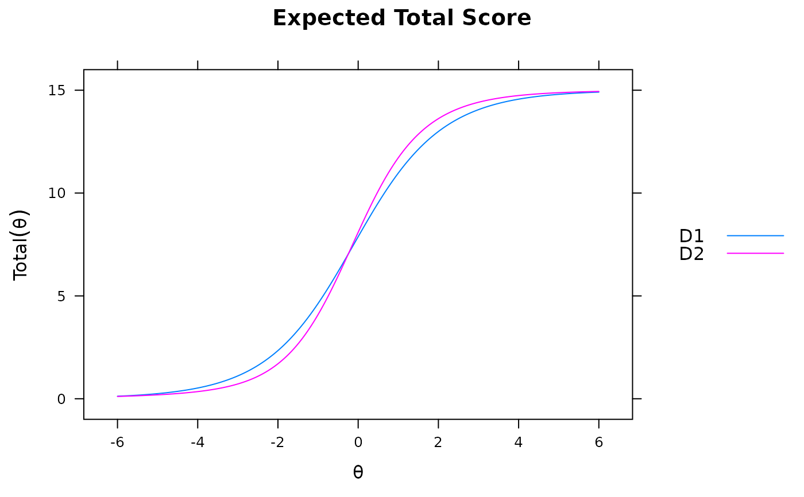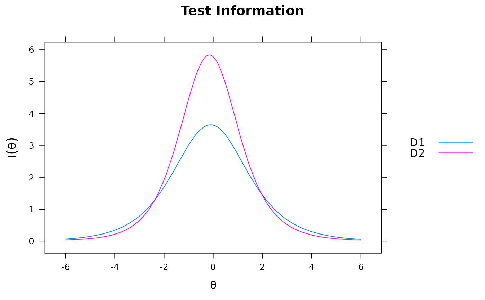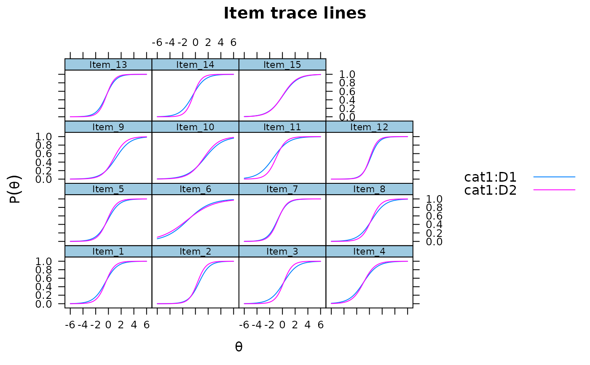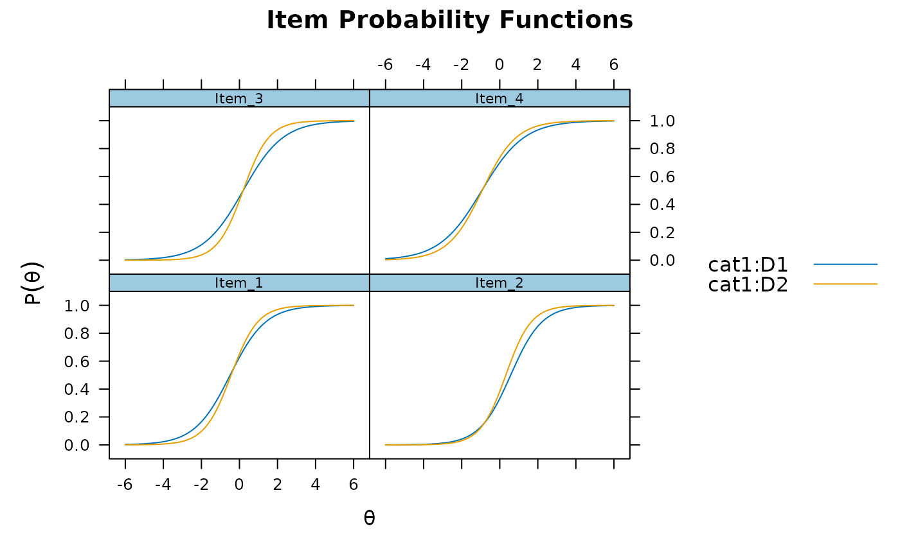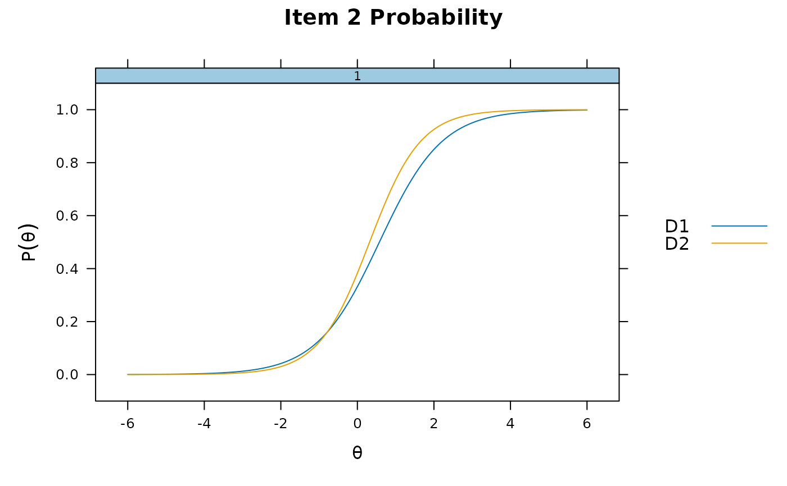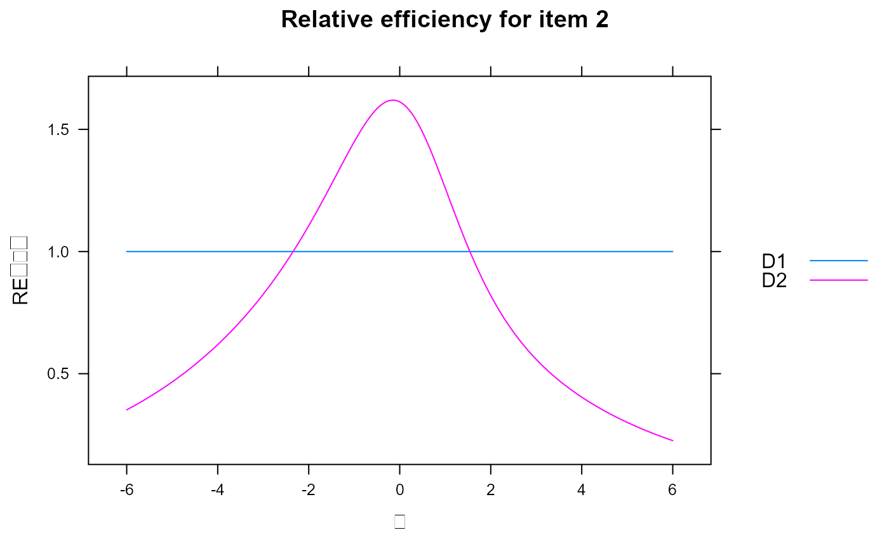#> #> Model 1: multipleGroup(data = dat, model = 1, group = group, invariance = c("slopes")) #> Model 2: multipleGroup(data = dat, model = 1, group = group) #>#> AIC AICc SABIC HQ BIC logLik X2 df p #> 1 35937.61 35939.72 36046.68 36030.15 36189.65 -17923.80 NaN NaN NaN #> 2 35927.53 35931.30 36072.96 36050.92 36263.58 -17903.76 40.08 15 0#> #> Model 1: multipleGroup(data = dat, model = 1, group = group, invariance = c("slopes", #> "intercepts", "free_var", "free_means")) #> Model 2: multipleGroup(data = dat, model = 1, group = group, invariance = c("slopes")) #>#> AIC AICc SABIC HQ BIC logLik X2 df p #> 1 35894.66 35895.73 35972.22 35960.47 36073.89 -17915.33 NaN NaN NaN #> 2 35937.61 35939.72 36046.68 36030.15 36189.65 -17923.80 -16.947 13 1#> #> Model 1: multipleGroup(data = dat, model = 1, group = group, invariance = c("slopes", #> "intercepts", "free_var")) #> Model 2: multipleGroup(data = dat, model = 1, group = group, invariance = c("slopes", #> "intercepts", "free_var", "free_means")) #>#> AIC AICc SABIC HQ BIC logLik X2 df p #> 1 35893.96 35894.96 35969.10 35957.71 36067.58 -17915.98 NaN NaN NaN #> 2 35894.66 35895.73 35972.22 35960.47 36073.89 -17915.33 1.296 1 0.255#> #> Model 1: multipleGroup(data = dat, model = 1, group = group, invariance = c("slopes", #> "intercepts"), optimizer = "NR") #> Model 2: multipleGroup(data = dat, model = 1, group = group, invariance = c("slopes", #> "intercepts", "free_var")) #>#> AIC AICc SABIC HQ BIC logLik X2 df p #> 1 35917.51 35918.45 35990.22 35979.20 36085.53 -17928.75 NaN NaN NaN #> 2 35893.96 35894.96 35969.10 35957.71 36067.58 -17915.98 25.552 1 0#test whether first 6 slopes should be equal across groups values <- multipleGroup(dat, 1, group = group, pars = 'values') values#> group item class name parnum value lbound ubound est #> 1 D1 Item_1 dich a1 1 0.85100000 -Inf Inf TRUE #> 2 D1 Item_1 dich d 2 0.54126659 -Inf Inf TRUE #> 3 D1 Item_1 dich g 3 0.00000000 0e+00 1 FALSE #> 4 D1 Item_1 dich u 4 1.00000000 0e+00 1 FALSE #> 5 D1 Item_2 dich a1 5 0.85100000 -Inf Inf TRUE #> 6 D1 Item_2 dich d 6 -0.53615172 -Inf Inf TRUE #> 7 D1 Item_2 dich g 7 0.00000000 0e+00 1 FALSE #> 8 D1 Item_2 dich u 8 1.00000000 0e+00 1 FALSE #> 9 D1 Item_3 dich a1 9 0.85100000 -Inf Inf TRUE #> 10 D1 Item_3 dich d 10 -0.21967593 -Inf Inf TRUE #> 11 D1 Item_3 dich g 11 0.00000000 0e+00 1 FALSE #> 12 D1 Item_3 dich u 12 1.00000000 0e+00 1 FALSE #> 13 D1 Item_4 dich a1 13 0.85100000 -Inf Inf TRUE #> 14 D1 Item_4 dich d 14 0.94120931 -Inf Inf TRUE #> 15 D1 Item_4 dich g 15 0.00000000 0e+00 1 FALSE #> 16 D1 Item_4 dich u 16 1.00000000 0e+00 1 FALSE #> 17 D1 Item_5 dich a1 17 0.85100000 -Inf Inf TRUE #> 18 D1 Item_5 dich d 18 0.18995704 -Inf Inf TRUE #> 19 D1 Item_5 dich g 19 0.00000000 0e+00 1 FALSE #> 20 D1 Item_5 dich u 20 1.00000000 0e+00 1 FALSE #> 21 D1 Item_6 dich a1 21 0.85100000 -Inf Inf TRUE #> 22 D1 Item_6 dich d 22 0.75196729 -Inf Inf TRUE #> 23 D1 Item_6 dich g 23 0.00000000 0e+00 1 FALSE #> 24 D1 Item_6 dich u 24 1.00000000 0e+00 1 FALSE #> 25 D1 Item_7 dich a1 25 0.85100000 -Inf Inf TRUE #> 26 D1 Item_7 dich d 26 0.92742018 -Inf Inf TRUE #> 27 D1 Item_7 dich g 27 0.00000000 0e+00 1 FALSE #> 28 D1 Item_7 dich u 28 1.00000000 0e+00 1 FALSE #> 29 D1 Item_8 dich a1 29 0.85100000 -Inf Inf TRUE #> 30 D1 Item_8 dich d 30 -0.33912546 -Inf Inf TRUE #> 31 D1 Item_8 dich g 31 0.00000000 0e+00 1 FALSE #> 32 D1 Item_8 dich u 32 1.00000000 0e+00 1 FALSE #> 33 D1 Item_9 dich a1 33 0.85100000 -Inf Inf TRUE #> 34 D1 Item_9 dich d 34 -1.01931663 -Inf Inf TRUE #> 35 D1 Item_9 dich g 35 0.00000000 0e+00 1 FALSE #> 36 D1 Item_9 dich u 36 1.00000000 0e+00 1 FALSE #> 37 D1 Item_10 dich a1 37 0.85100000 -Inf Inf TRUE #> 38 D1 Item_10 dich d 38 -1.17772444 -Inf Inf TRUE #> 39 D1 Item_10 dich g 39 0.00000000 0e+00 1 FALSE #> 40 D1 Item_10 dich u 40 1.00000000 0e+00 1 FALSE #> 41 D1 Item_11 dich a1 41 0.85100000 -Inf Inf TRUE #> 42 D1 Item_11 dich d 42 1.22822603 -Inf Inf TRUE #> 43 D1 Item_11 dich g 43 0.00000000 0e+00 1 FALSE #> 44 D1 Item_11 dich u 44 1.00000000 0e+00 1 FALSE #> 45 D1 Item_12 dich a1 45 0.85100000 -Inf Inf TRUE #> 46 D1 Item_12 dich d 46 -0.15039813 -Inf Inf TRUE #> 47 D1 Item_12 dich g 47 0.00000000 0e+00 1 FALSE #> 48 D1 Item_12 dich u 48 1.00000000 0e+00 1 FALSE #> 49 D1 Item_13 dich a1 49 0.85100000 -Inf Inf TRUE #> 50 D1 Item_13 dich d 50 0.41943284 -Inf Inf TRUE #> 51 D1 Item_13 dich g 51 0.00000000 0e+00 1 FALSE #> 52 D1 Item_13 dich u 52 1.00000000 0e+00 1 FALSE #> 53 D1 Item_14 dich a1 53 0.85100000 -Inf Inf TRUE #> 54 D1 Item_14 dich d 54 0.45478078 -Inf Inf TRUE #> 55 D1 Item_14 dich g 55 0.00000000 0e+00 1 FALSE #> 56 D1 Item_14 dich u 56 1.00000000 0e+00 1 FALSE #> 57 D1 Item_15 dich a1 57 0.85100000 -Inf Inf TRUE #> 58 D1 Item_15 dich d 58 -0.04680406 -Inf Inf TRUE #> 59 D1 Item_15 dich g 59 0.00000000 0e+00 1 FALSE #> 60 D1 Item_15 dich u 60 1.00000000 0e+00 1 FALSE #> 61 D1 GROUP GroupPars MEAN_1 61 0.00000000 -Inf Inf FALSE #> 62 D1 GROUP GroupPars COV_11 62 1.00000000 1e-04 Inf FALSE #> 63 D2 Item_1 dich a1 63 0.85100000 -Inf Inf TRUE #> 64 D2 Item_1 dich d 64 0.54126659 -Inf Inf TRUE #> 65 D2 Item_1 dich g 65 0.00000000 0e+00 1 FALSE #> 66 D2 Item_1 dich u 66 1.00000000 0e+00 1 FALSE #> 67 D2 Item_2 dich a1 67 0.85100000 -Inf Inf TRUE #> 68 D2 Item_2 dich d 68 -0.53615172 -Inf Inf TRUE #> 69 D2 Item_2 dich g 69 0.00000000 0e+00 1 FALSE #> 70 D2 Item_2 dich u 70 1.00000000 0e+00 1 FALSE #> 71 D2 Item_3 dich a1 71 0.85100000 -Inf Inf TRUE #> 72 D2 Item_3 dich d 72 -0.21967593 -Inf Inf TRUE #> 73 D2 Item_3 dich g 73 0.00000000 0e+00 1 FALSE #> 74 D2 Item_3 dich u 74 1.00000000 0e+00 1 FALSE #> 75 D2 Item_4 dich a1 75 0.85100000 -Inf Inf TRUE #> 76 D2 Item_4 dich d 76 0.94120931 -Inf Inf TRUE #> 77 D2 Item_4 dich g 77 0.00000000 0e+00 1 FALSE #> 78 D2 Item_4 dich u 78 1.00000000 0e+00 1 FALSE #> 79 D2 Item_5 dich a1 79 0.85100000 -Inf Inf TRUE #> 80 D2 Item_5 dich d 80 0.18995704 -Inf Inf TRUE #> 81 D2 Item_5 dich g 81 0.00000000 0e+00 1 FALSE #> 82 D2 Item_5 dich u 82 1.00000000 0e+00 1 FALSE #> 83 D2 Item_6 dich a1 83 0.85100000 -Inf Inf TRUE #> 84 D2 Item_6 dich d 84 0.75196729 -Inf Inf TRUE #> 85 D2 Item_6 dich g 85 0.00000000 0e+00 1 FALSE #> 86 D2 Item_6 dich u 86 1.00000000 0e+00 1 FALSE #> 87 D2 Item_7 dich a1 87 0.85100000 -Inf Inf TRUE #> 88 D2 Item_7 dich d 88 0.92742018 -Inf Inf TRUE #> 89 D2 Item_7 dich g 89 0.00000000 0e+00 1 FALSE #> 90 D2 Item_7 dich u 90 1.00000000 0e+00 1 FALSE #> 91 D2 Item_8 dich a1 91 0.85100000 -Inf Inf TRUE #> 92 D2 Item_8 dich d 92 -0.33912546 -Inf Inf TRUE #> 93 D2 Item_8 dich g 93 0.00000000 0e+00 1 FALSE #> 94 D2 Item_8 dich u 94 1.00000000 0e+00 1 FALSE #> 95 D2 Item_9 dich a1 95 0.85100000 -Inf Inf TRUE #> 96 D2 Item_9 dich d 96 -1.01931663 -Inf Inf TRUE #> 97 D2 Item_9 dich g 97 0.00000000 0e+00 1 FALSE #> 98 D2 Item_9 dich u 98 1.00000000 0e+00 1 FALSE #> 99 D2 Item_10 dich a1 99 0.85100000 -Inf Inf TRUE #> 100 D2 Item_10 dich d 100 -1.17772444 -Inf Inf TRUE #> 101 D2 Item_10 dich g 101 0.00000000 0e+00 1 FALSE #> 102 D2 Item_10 dich u 102 1.00000000 0e+00 1 FALSE #> 103 D2 Item_11 dich a1 103 0.85100000 -Inf Inf TRUE #> 104 D2 Item_11 dich d 104 1.22822603 -Inf Inf TRUE #> 105 D2 Item_11 dich g 105 0.00000000 0e+00 1 FALSE #> 106 D2 Item_11 dich u 106 1.00000000 0e+00 1 FALSE #> 107 D2 Item_12 dich a1 107 0.85100000 -Inf Inf TRUE #> 108 D2 Item_12 dich d 108 -0.15039813 -Inf Inf TRUE #> 109 D2 Item_12 dich g 109 0.00000000 0e+00 1 FALSE #> 110 D2 Item_12 dich u 110 1.00000000 0e+00 1 FALSE #> 111 D2 Item_13 dich a1 111 0.85100000 -Inf Inf TRUE #> 112 D2 Item_13 dich d 112 0.41943284 -Inf Inf TRUE #> 113 D2 Item_13 dich g 113 0.00000000 0e+00 1 FALSE #> 114 D2 Item_13 dich u 114 1.00000000 0e+00 1 FALSE #> 115 D2 Item_14 dich a1 115 0.85100000 -Inf Inf TRUE #> 116 D2 Item_14 dich d 116 0.45478078 -Inf Inf TRUE #> 117 D2 Item_14 dich g 117 0.00000000 0e+00 1 FALSE #> 118 D2 Item_14 dich u 118 1.00000000 0e+00 1 FALSE #> 119 D2 Item_15 dich a1 119 0.85100000 -Inf Inf TRUE #> 120 D2 Item_15 dich d 120 -0.04680406 -Inf Inf TRUE #> 121 D2 Item_15 dich g 121 0.00000000 0e+00 1 FALSE #> 122 D2 Item_15 dich u 122 1.00000000 0e+00 1 FALSE #> 123 D2 GROUP GroupPars MEAN_1 123 0.00000000 -Inf Inf FALSE #> 124 D2 GROUP GroupPars COV_11 124 1.00000000 1e-04 Inf FALSE #> prior.type prior_1 prior_2 #> 1 none NaN NaN #> 2 none NaN NaN #> 3 none NaN NaN #> 4 none NaN NaN #> 5 none NaN NaN #> 6 none NaN NaN #> 7 none NaN NaN #> 8 none NaN NaN #> 9 none NaN NaN #> 10 none NaN NaN #> 11 none NaN NaN #> 12 none NaN NaN #> 13 none NaN NaN #> 14 none NaN NaN #> 15 none NaN NaN #> 16 none NaN NaN #> 17 none NaN NaN #> 18 none NaN NaN #> 19 none NaN NaN #> 20 none NaN NaN #> 21 none NaN NaN #> 22 none NaN NaN #> 23 none NaN NaN #> 24 none NaN NaN #> 25 none NaN NaN #> 26 none NaN NaN #> 27 none NaN NaN #> 28 none NaN NaN #> 29 none NaN NaN #> 30 none NaN NaN #> 31 none NaN NaN #> 32 none NaN NaN #> 33 none NaN NaN #> 34 none NaN NaN #> 35 none NaN NaN #> 36 none NaN NaN #> 37 none NaN NaN #> 38 none NaN NaN #> 39 none NaN NaN #> 40 none NaN NaN #> 41 none NaN NaN #> 42 none NaN NaN #> 43 none NaN NaN #> 44 none NaN NaN #> 45 none NaN NaN #> 46 none NaN NaN #> 47 none NaN NaN #> 48 none NaN NaN #> 49 none NaN NaN #> 50 none NaN NaN #> 51 none NaN NaN #> 52 none NaN NaN #> 53 none NaN NaN #> 54 none NaN NaN #> 55 none NaN NaN #> 56 none NaN NaN #> 57 none NaN NaN #> 58 none NaN NaN #> 59 none NaN NaN #> 60 none NaN NaN #> 61 none NaN NaN #> 62 none NaN NaN #> 63 none NaN NaN #> 64 none NaN NaN #> 65 none NaN NaN #> 66 none NaN NaN #> 67 none NaN NaN #> 68 none NaN NaN #> 69 none NaN NaN #> 70 none NaN NaN #> 71 none NaN NaN #> 72 none NaN NaN #> 73 none NaN NaN #> 74 none NaN NaN #> 75 none NaN NaN #> 76 none NaN NaN #> 77 none NaN NaN #> 78 none NaN NaN #> 79 none NaN NaN #> 80 none NaN NaN #> 81 none NaN NaN #> 82 none NaN NaN #> 83 none NaN NaN #> 84 none NaN NaN #> 85 none NaN NaN #> 86 none NaN NaN #> 87 none NaN NaN #> 88 none NaN NaN #> 89 none NaN NaN #> 90 none NaN NaN #> 91 none NaN NaN #> 92 none NaN NaN #> 93 none NaN NaN #> 94 none NaN NaN #> 95 none NaN NaN #> 96 none NaN NaN #> 97 none NaN NaN #> 98 none NaN NaN #> 99 none NaN NaN #> 100 none NaN NaN #> 101 none NaN NaN #> 102 none NaN NaN #> 103 none NaN NaN #> 104 none NaN NaN #> 105 none NaN NaN #> 106 none NaN NaN #> 107 none NaN NaN #> 108 none NaN NaN #> 109 none NaN NaN #> 110 none NaN NaN #> 111 none NaN NaN #> 112 none NaN NaN #> 113 none NaN NaN #> 114 none NaN NaN #> 115 none NaN NaN #> 116 none NaN NaN #> 117 none NaN NaN #> 118 none NaN NaN #> 119 none NaN NaN #> 120 none NaN NaN #> 121 none NaN NaN #> 122 none NaN NaN #> 123 none NaN NaN #> 124 none NaN NaNconstrain <- list(c(1, 63), c(5,67), c(9,71), c(13,75), c(17,79), c(21,83)) equalslopes <- multipleGroup(dat, 1, group = group, constrain = constrain) anova(equalslopes, mod_configural)#> #> Model 1: multipleGroup(data = dat, model = 1, group = group, constrain = constrain) #> Model 2: multipleGroup(data = dat, model = 1, group = group) #>#> AIC AICc SABIC HQ BIC logLik X2 df p #> 1 35935.51 35938.56 36066.40 36046.56 36237.96 -17913.76 NaN NaN NaN #> 2 35927.53 35931.30 36072.96 36050.92 36263.58 -17903.76 19.983 6 0.003#same as above, but using mirt.model syntax newmodel <- ' F = 1-15 CONSTRAINB = (1-6, a1)' equalslopes <- multipleGroup(dat, newmodel, group = group) coef(equalslopes, simplify=TRUE)#> $D1 #> $items #> a1 d g u #> Item_1 1.246 0.546 0 1 #> Item_2 1.356 -0.720 0 1 #> Item_3 1.199 -0.201 0 1 #> Item_4 1.006 0.861 0 1 #> Item_5 1.224 0.131 0 1 #> Item_6 0.515 0.673 0 1 #> Item_7 1.305 0.999 0 1 #> Item_8 0.943 -0.328 0 1 #> Item_9 0.916 -1.058 0 1 #> Item_10 0.731 -1.079 0 1 #> Item_11 0.851 1.186 0 1 #> Item_12 1.515 -0.251 0 1 #> Item_13 1.322 0.444 0 1 #> Item_14 1.058 0.451 0 1 #> Item_15 0.885 -0.061 0 1 #> #> $means #> F #> 0 #> #> $cov #> F #> F 1 #> #> #> $D2 #> $items #> a1 d g u #> Item_1 1.246 0.599 0 1 #> Item_2 1.356 -0.462 0 1 #> Item_3 1.199 -0.264 0 1 #> Item_4 1.006 1.001 0 1 #> Item_5 1.224 0.266 0 1 #> Item_6 0.515 0.631 0 1 #> Item_7 1.374 1.031 0 1 #> Item_8 1.268 -0.367 0 1 #> Item_9 1.061 -0.952 0 1 #> Item_10 0.826 -1.115 0 1 #> Item_11 1.282 1.308 0 1 #> Item_12 1.625 -0.107 0 1 #> Item_13 1.523 0.493 0 1 #> Item_14 1.545 0.532 0 1 #> Item_15 0.885 -0.030 0 1 #> #> $means #> F #> 0 #> #> $cov #> F #> F 1 #> #>############ # vertical scaling (i.e., equating when groups answer items others do not) dat2 <- dat dat2[group == 'D1', 1:2] <- dat2[group != 'D1', 14:15] <- NA head(dat2)#> Item_1 Item_2 Item_3 Item_4 Item_5 Item_6 Item_7 Item_8 Item_9 Item_10 #> [1,] NA NA 1 1 1 0 1 1 0 0 #> [2,] NA NA 1 1 1 1 1 0 1 0 #> [3,] NA NA 0 1 1 1 1 1 0 0 #> [4,] NA NA 1 1 1 1 1 1 0 0 #> [5,] NA NA 1 0 1 1 1 1 1 0 #> [6,] NA NA 1 1 1 1 1 0 0 0 #> Item_11 Item_12 Item_13 Item_14 Item_15 #> [1,] 1 1 0 1 1 #> [2,] 0 1 1 1 1 #> [3,] 1 0 1 1 1 #> [4,] 1 1 1 1 1 #> [5,] 1 1 1 1 1 #> [6,] 1 1 1 1 0#> Item_1 Item_2 Item_3 Item_4 Item_5 Item_6 Item_7 Item_8 Item_9 Item_10 #> [1995,] 1 1 0 0 0 1 1 1 0 0 #> [1996,] 1 0 1 1 1 0 1 1 1 1 #> [1997,] 0 1 0 0 0 1 0 1 0 0 #> [1998,] 0 1 0 0 1 0 0 0 0 0 #> [1999,] 1 1 0 1 1 1 1 1 0 0 #> [2000,] 0 0 0 0 0 0 1 0 0 0 #> Item_11 Item_12 Item_13 Item_14 Item_15 #> [1995,] 1 0 1 NA NA #> [1996,] 1 1 0 NA NA #> [1997,] 1 0 1 NA NA #> [1998,] 0 1 0 NA NA #> [1999,] 1 1 1 NA NA #> [2000,] 0 0 0 NA NA# items with missing responses need to be constrained across groups for identification nms <- colnames(dat2) mod <- multipleGroup(dat2, 1, group, invariance = nms[c(1:2, 14:15)]) # this will throw an error without proper constraints (SEs cannot be computed either) # mod <- multipleGroup(dat2, 1, group) # model still does not have anchors, therefore need to add a few (here use items 3-5) mod_anchor <- multipleGroup(dat2, 1, group, invariance = c(nms[c(1:5, 14:15)], 'free_means', 'free_var')) coef(mod_anchor, simplify=TRUE)#> $D1 #> $items #> a1 d g u #> Item_1 1.108 0.542 0 1 #> Item_2 1.160 -0.564 0 1 #> Item_3 1.073 -0.272 0 1 #> Item_4 0.871 0.895 0 1 #> Item_5 1.089 0.160 0 1 #> Item_6 0.582 0.685 0 1 #> Item_7 1.292 1.009 0 1 #> Item_8 0.906 -0.328 0 1 #> Item_9 0.855 -1.049 0 1 #> Item_10 0.746 -1.089 0 1 #> Item_11 0.866 1.200 0 1 #> Item_12 1.432 -0.247 0 1 #> Item_13 1.244 0.440 0 1 #> Item_14 1.000 0.449 0 1 #> Item_15 0.852 -0.061 0 1 #> #> $means #> F1 #> 0 #> #> $cov #> F1 #> F1 1 #> #> #> $D2 #> $items #> a1 d g u #> Item_1 1.108 0.542 0 1 #> Item_2 1.160 -0.564 0 1 #> Item_3 1.073 -0.272 0 1 #> Item_4 0.871 0.895 0 1 #> Item_5 1.089 0.160 0 1 #> Item_6 0.374 0.596 0 1 #> Item_7 1.090 0.942 0 1 #> Item_8 0.988 -0.437 0 1 #> Item_9 0.854 -1.018 0 1 #> Item_10 0.657 -1.164 0 1 #> Item_11 1.023 1.228 0 1 #> Item_12 1.324 -0.207 0 1 #> Item_13 1.212 0.399 0 1 #> Item_14 1.000 0.449 0 1 #> Item_15 0.852 -0.061 0 1 #> #> $means #> F1 #> 0.077 #> #> $cov #> F1 #> F1 1.658 #> #># check if identified by computing information matrix mod_anchor <- multipleGroup(dat2, 1, group, pars = mod2values(mod_anchor), TOL=NaN, SE=TRUE, invariance = c(nms[c(1:5, 14:15)], 'free_means', 'free_var')) mod_anchor#> #> Call: #> multipleGroup(data = dat2, model = 1, group = group, invariance = c(nms[c(1:5, #> 14:15)], "free_means", "free_var"), pars = mod2values(mod_anchor), #> TOL = NaN, SE = TRUE) #> #> Full-information item factor analysis with 1 factor(s). #> Converged within NaN tolerance after 1 EM iterations. #> mirt version: 1.32.10 #> M-step optimizer: nlminb #> EM acceleration: Ramsay #> Number of rectangular quadrature: 61 #> Latent density type: Gaussian #> #> Information matrix estimated with method: Oakes #> Second-order test: model is a possible local maximum #> Condition number of information matrix = 46.72946 #> #> Log-likelihood = -15562.41 #> Estimated parameters: 62 #> AIC = 31220.81; AICc = 31223.22 #> BIC = 31489.66; SABIC = 31337.16#> $D1 #> $Item_1 #> a1 d g u #> par 1.108 0.542 0 1 #> CI_2.5 0.875 0.342 NA NA #> CI_97.5 1.342 0.741 NA NA #> #> $Item_2 #> a1 d g u #> par 1.160 -0.564 0 1 #> CI_2.5 0.916 -0.772 NA NA #> CI_97.5 1.403 -0.356 NA NA #> #> $Item_3 #> a1 d g u #> par 1.073 -0.272 0 1 #> CI_2.5 0.911 -0.401 NA NA #> CI_97.5 1.236 -0.143 NA NA #> #> $Item_4 #> a1 d g u #> par 0.871 0.895 0 1 #> CI_2.5 0.725 0.769 NA NA #> CI_97.5 1.017 1.022 NA NA #> #> $Item_5 #> a1 d g u #> par 1.089 0.160 0 1 #> CI_2.5 0.924 0.031 NA NA #> CI_97.5 1.254 0.289 NA NA #> #> $Item_6 #> a1 d g u #> par 0.582 0.685 0 1 #> CI_2.5 0.405 0.543 NA NA #> CI_97.5 0.760 0.828 NA NA #> #> $Item_7 #> a1 d g u #> par 1.292 1.009 0 1 #> CI_2.5 1.027 0.819 NA NA #> CI_97.5 1.558 1.198 NA NA #> #> $Item_8 #> a1 d g u #> par 0.906 -0.328 0 1 #> CI_2.5 0.702 -0.475 NA NA #> CI_97.5 1.111 -0.180 NA NA #> #> $Item_9 #> a1 d g u #> par 0.855 -1.049 0 1 #> CI_2.5 0.642 -1.216 NA NA #> CI_97.5 1.069 -0.882 NA NA #> #> $Item_10 #> a1 d g u #> par 0.746 -1.089 0 1 #> CI_2.5 0.542 -1.252 NA NA #> CI_97.5 0.950 -0.926 NA NA #> #> $Item_11 #> a1 d g u #> par 0.866 1.200 0 1 #> CI_2.5 0.651 1.026 NA NA #> CI_97.5 1.081 1.374 NA NA #> #> $Item_12 #> a1 d g u #> par 1.432 -0.247 0 1 #> CI_2.5 1.152 -0.420 NA NA #> CI_97.5 1.713 -0.075 NA NA #> #> $Item_13 #> a1 d g u #> par 1.244 0.440 0 1 #> CI_2.5 0.994 0.275 NA NA #> CI_97.5 1.493 0.606 NA NA #> #> $Item_14 #> a1 d g u #> par 1.000 0.449 0 1 #> CI_2.5 0.785 0.295 NA NA #> CI_97.5 1.215 0.603 NA NA #> #> $Item_15 #> a1 d g u #> par 0.852 -0.061 0 1 #> CI_2.5 0.655 -0.204 NA NA #> CI_97.5 1.049 0.082 NA NA #> #> $GroupPars #> MEAN_1 COV_11 #> par 0 1 #> CI_2.5 NA NA #> CI_97.5 NA NA #> #> #> $D2 #> $Item_1 #> a1 d g u #> par 1.108 0.542 0 1 #> CI_2.5 0.875 0.342 NA NA #> CI_97.5 1.342 0.741 NA NA #> #> $Item_2 #> a1 d g u #> par 1.160 -0.564 0 1 #> CI_2.5 0.916 -0.772 NA NA #> CI_97.5 1.403 -0.356 NA NA #> #> $Item_3 #> a1 d g u #> par 1.073 -0.272 0 1 #> CI_2.5 0.911 -0.401 NA NA #> CI_97.5 1.236 -0.143 NA NA #> #> $Item_4 #> a1 d g u #> par 0.871 0.895 0 1 #> CI_2.5 0.725 0.769 NA NA #> CI_97.5 1.017 1.022 NA NA #> #> $Item_5 #> a1 d g u #> par 1.089 0.160 0 1 #> CI_2.5 0.924 0.031 NA NA #> CI_97.5 1.254 0.289 NA NA #> #> $Item_6 #> a1 d g u #> par 0.374 0.596 0 1 #> CI_2.5 0.243 0.456 NA NA #> CI_97.5 0.506 0.736 NA NA #> #> $Item_7 #> a1 d g u #> par 1.090 0.942 0 1 #> CI_2.5 0.855 0.733 NA NA #> CI_97.5 1.324 1.152 NA NA #> #> $Item_8 #> a1 d g u #> par 0.988 -0.437 0 1 #> CI_2.5 0.775 -0.625 NA NA #> CI_97.5 1.200 -0.250 NA NA #> #> $Item_9 #> a1 d g u #> par 0.854 -1.018 0 1 #> CI_2.5 0.657 -1.211 NA NA #> CI_97.5 1.050 -0.825 NA NA #> #> $Item_10 #> a1 d g u #> par 0.657 -1.164 0 1 #> CI_2.5 0.485 -1.345 NA NA #> CI_97.5 0.829 -0.982 NA NA #> #> $Item_11 #> a1 d g u #> par 1.023 1.228 0 1 #> CI_2.5 0.796 1.012 NA NA #> CI_97.5 1.250 1.443 NA NA #> #> $Item_12 #> a1 d g u #> par 1.324 -0.207 0 1 #> CI_2.5 1.050 -0.425 NA NA #> CI_97.5 1.598 0.011 NA NA #> #> $Item_13 #> a1 d g u #> par 1.212 0.399 0 1 #> CI_2.5 0.960 0.191 NA NA #> CI_97.5 1.465 0.607 NA NA #> #> $Item_14 #> a1 d g u #> par 1.000 0.449 0 1 #> CI_2.5 0.785 0.295 NA NA #> CI_97.5 1.215 0.603 NA NA #> #> $Item_15 #> a1 d g u #> par 0.852 -0.061 0 1 #> CI_2.5 0.655 -0.204 NA NA #> CI_97.5 1.049 0.082 NA NA #> #> $GroupPars #> MEAN_1 COV_11 #> par 0.077 1.658 #> CI_2.5 -0.062 1.235 #> CI_97.5 0.215 2.080 #> #>#> $D1 #> $Item_1 #> a1 d logit(g) logit(u) #> par 1.108 0.542 -999 999 #> SE 0.119 0.102 NA NA #> #> $Item_2 #> a1 d logit(g) logit(u) #> par 1.160 -0.564 -999 999 #> SE 0.124 0.106 NA NA #> #> $Item_3 #> a1 d logit(g) logit(u) #> par 1.073 -0.272 -999 999 #> SE 0.083 0.066 NA NA #> #> $Item_4 #> a1 d logit(g) logit(u) #> par 0.871 0.895 -999 999 #> SE 0.075 0.064 NA NA #> #> $Item_5 #> a1 d logit(g) logit(u) #> par 1.089 0.160 -999 999 #> SE 0.084 0.066 NA NA #> #> $Item_6 #> a1 d logit(g) logit(u) #> par 0.582 0.685 -999 999 #> SE 0.090 0.073 NA NA #> #> $Item_7 #> a1 d logit(g) logit(u) #> par 1.292 1.009 -999 999 #> SE 0.135 0.097 NA NA #> #> $Item_8 #> a1 d logit(g) logit(u) #> par 0.906 -0.328 -999 999 #> SE 0.104 0.075 NA NA #> #> $Item_9 #> a1 d logit(g) logit(u) #> par 0.855 -1.049 -999 999 #> SE 0.109 0.085 NA NA #> #> $Item_10 #> a1 d logit(g) logit(u) #> par 0.746 -1.089 -999 999 #> SE 0.104 0.083 NA NA #> #> $Item_11 #> a1 d logit(g) logit(u) #> par 0.866 1.200 -999 999 #> SE 0.110 0.089 NA NA #> #> $Item_12 #> a1 d logit(g) logit(u) #> par 1.432 -0.247 -999 999 #> SE 0.143 0.088 NA NA #> #> $Item_13 #> a1 d logit(g) logit(u) #> par 1.244 0.440 -999 999 #> SE 0.127 0.085 NA NA #> #> $Item_14 #> a1 d logit(g) logit(u) #> par 1.00 0.449 -999 999 #> SE 0.11 0.078 NA NA #> #> $Item_15 #> a1 d logit(g) logit(u) #> par 0.852 -0.061 -999 999 #> SE 0.100 0.073 NA NA #> #> $GroupPars #> MEAN_1 COV_11 #> par 0 1 #> SE NA NA #> #> #> $D2 #> $Item_1 #> a1 d logit(g) logit(u) #> par 1.108 0.542 -999 999 #> SE 0.119 0.102 NA NA #> #> $Item_2 #> a1 d logit(g) logit(u) #> par 1.160 -0.564 -999 999 #> SE 0.124 0.106 NA NA #> #> $Item_3 #> a1 d logit(g) logit(u) #> par 1.073 -0.272 -999 999 #> SE 0.083 0.066 NA NA #> #> $Item_4 #> a1 d logit(g) logit(u) #> par 0.871 0.895 -999 999 #> SE 0.075 0.064 NA NA #> #> $Item_5 #> a1 d logit(g) logit(u) #> par 1.089 0.160 -999 999 #> SE 0.084 0.066 NA NA #> #> $Item_6 #> a1 d logit(g) logit(u) #> par 0.374 0.596 -999 999 #> SE 0.067 0.071 NA NA #> #> $Item_7 #> a1 d logit(g) logit(u) #> par 1.09 0.942 -999 999 #> SE 0.12 0.107 NA NA #> #> $Item_8 #> a1 d logit(g) logit(u) #> par 0.988 -0.437 -999 999 #> SE 0.108 0.096 NA NA #> #> $Item_9 #> a1 d logit(g) logit(u) #> par 0.854 -1.018 -999 999 #> SE 0.100 0.098 NA NA #> #> $Item_10 #> a1 d logit(g) logit(u) #> par 0.657 -1.164 -999 999 #> SE 0.088 0.092 NA NA #> #> $Item_11 #> a1 d logit(g) logit(u) #> par 1.023 1.228 -999 999 #> SE 0.116 0.110 NA NA #> #> $Item_12 #> a1 d logit(g) logit(u) #> par 1.324 -0.207 -999 999 #> SE 0.140 0.111 NA NA #> #> $Item_13 #> a1 d logit(g) logit(u) #> par 1.212 0.399 -999 999 #> SE 0.129 0.106 NA NA #> #> $Item_14 #> a1 d logit(g) logit(u) #> par 1.00 0.449 -999 999 #> SE 0.11 0.078 NA NA #> #> $Item_15 #> a1 d logit(g) logit(u) #> par 0.852 -0.061 -999 999 #> SE 0.100 0.073 NA NA #> #> $GroupPars #> MEAN_1 COV_11 #> par 0.077 1.658 #> SE 0.071 0.216 #> #>############# #DIF test for each item (using all other items as anchors) itemnames <- colnames(dat) refmodel <- multipleGroup(dat, 1, group = group, SE=TRUE, invariance=c('free_means', 'free_var', itemnames)) #loop over items (in practice, run in parallel to increase speed). May be better to use ?DIF estmodels <- vector('list', ncol(dat)) for(i in 1:ncol(dat)) estmodels[[i]] <- multipleGroup(dat, 1, group = group, verbose = FALSE, invariance=c('free_means', 'free_var', itemnames[-i])) (anovas <- lapply(estmodels, anova, object2=refmodel, verbose=FALSE))#> [[1]] #> AIC AICc SABIC HQ BIC logLik X2 df p #> 1 35894.66 35895.73 35972.22 35960.47 36073.89 -17915.33 NaN NaN NaN #> 2 35898.45 35899.66 35980.86 35968.37 36088.88 -17915.22 0.214 2 0.899 #> #> [[2]] #> AIC AICc SABIC HQ BIC logLik X2 df p #> 1 35894.66 35895.73 35972.22 35960.47 36073.89 -17915.33 NaN NaN NaN #> 2 35896.81 35898.02 35979.22 35966.73 36087.24 -17914.41 1.847 2 0.397 #> #> [[3]] #> AIC AICc SABIC HQ BIC logLik X2 df p #> 1 35894.66 35895.73 35972.22 35960.47 36073.89 -17915.33 NaN NaN NaN #> 2 35893.66 35894.87 35976.07 35963.58 36084.09 -17912.83 5.001 2 0.082 #> #> [[4]] #> AIC AICc SABIC HQ BIC logLik X2 df p #> 1 35894.66 35895.73 35972.22 35960.47 36073.89 -17915.33 NaN NaN NaN #> 2 35897.07 35898.29 35979.48 35967.00 36087.50 -17914.54 1.586 2 0.453 #> #> [[5]] #> AIC AICc SABIC HQ BIC logLik X2 df p #> 1 35894.66 35895.73 35972.22 35960.47 36073.89 -17915.33 NaN NaN NaN #> 2 35897.97 35899.18 35980.38 35967.89 36088.40 -17914.99 0.688 2 0.709 #> #> [[6]] #> AIC AICc SABIC HQ BIC logLik X2 df p #> 1 35894.66 35895.73 35972.22 35960.47 36073.89 -17915.33 NaN NaN NaN #> 2 35894.87 35896.08 35977.28 35964.79 36085.30 -17913.43 3.793 2 0.15 #> #> [[7]] #> AIC AICc SABIC HQ BIC logLik X2 df p #> 1 35894.66 35895.73 35972.22 35960.47 36073.89 -17915.33 NaN NaN NaN #> 2 35897.53 35898.74 35979.94 35967.45 36087.96 -17914.76 1.131 2 0.568 #> #> [[8]] #> AIC AICc SABIC HQ BIC logLik X2 df p #> 1 35894.66 35895.73 35972.22 35960.47 36073.89 -17915.33 NaN NaN NaN #> 2 35897.20 35898.41 35979.61 35967.12 36087.63 -17914.60 1.462 2 0.481 #> #> [[9]] #> AIC AICc SABIC HQ BIC logLik X2 df p #> 1 35894.66 35895.73 35972.22 35960.47 36073.89 -17915.33 NaN NaN NaN #> 2 35898.46 35899.67 35980.87 35968.38 36088.89 -17915.23 0.197 2 0.906 #> #> [[10]] #> AIC AICc SABIC HQ BIC logLik X2 df p #> 1 35894.66 35895.73 35972.22 35960.47 36073.89 -17915.33 NaN NaN NaN #> 2 35897.67 35898.88 35980.08 35967.59 36088.10 -17914.83 0.993 2 0.609 #> #> [[11]] #> AIC AICc SABIC HQ BIC logLik X2 df p #> 1 35894.66 35895.73 35972.22 35960.47 36073.89 -17915.33 NaN NaN NaN #> 2 35896.07 35897.28 35978.48 35965.99 36086.50 -17914.03 2.593 2 0.273 #> #> [[12]] #> AIC AICc SABIC HQ BIC logLik X2 df p #> 1 35894.66 35895.73 35972.22 35960.47 36073.89 -17915.33 NaN NaN NaN #> 2 35897.57 35898.78 35979.98 35967.49 36088.00 -17914.78 1.092 2 0.579 #> #> [[13]] #> AIC AICc SABIC HQ BIC logLik X2 df p #> 1 35894.66 35895.73 35972.22 35960.47 36073.89 -17915.33 NaN NaN NaN #> 2 35898.47 35899.68 35980.88 35968.39 36088.90 -17915.23 0.192 2 0.908 #> #> [[14]] #> AIC AICc SABIC HQ BIC logLik X2 df p #> 1 35894.66 35895.73 35972.22 35960.47 36073.89 -17915.33 NaN NaN NaN #> 2 35896.15 35897.37 35978.57 35966.08 36086.58 -17914.08 2.505 2 0.286 #> #> [[15]] #> AIC AICc SABIC HQ BIC logLik X2 df p #> 1 35894.66 35895.73 35972.22 35960.47 36073.89 -17915.33 NaN NaN NaN #> 2 35896.96 35898.17 35979.37 35966.88 36087.39 -17914.48 1.699 2 0.428 #>#family-wise error control p <- do.call(rbind, lapply(anovas, function(x) x[2, 'p'])) p.adjust(p, method = 'BH')#> [1] 0.9084061 0.8299971 0.8299971 0.8299971 0.8862326 0.8299971 0.8299971 #> [8] 0.8299971 0.9084061 0.8299971 0.8299971 0.8299971 0.9084061 0.8299971 #> [15] 0.8299971#same as above, except only test if slopes vary (1 df) #constrain all intercepts estmodels <- vector('list', ncol(dat)) for(i in 1:ncol(dat)) estmodels[[i]] <- multipleGroup(dat, 1, group = group, verbose = FALSE, invariance=c('free_means', 'free_var', 'intercepts', itemnames[-i])) (anovas <- lapply(estmodels, anova, object2=refmodel, verbose=FALSE))#> [[1]] #> AIC AICc SABIC HQ BIC logLik X2 df p #> 1 35894.66 35895.73 35972.22 35960.47 36073.89 -17915.33 NaN NaN NaN #> 2 35896.52 35897.66 35976.50 35964.38 36081.35 -17915.26 0.143 1 0.705 #> #> [[2]] #> AIC AICc SABIC HQ BIC logLik X2 df p #> 1 35894.66 35895.73 35972.22 35960.47 36073.89 -17915.33 NaN NaN NaN #> 2 35896.60 35897.74 35976.58 35964.46 36081.43 -17915.30 0.061 1 0.804 #> #> [[3]] #> AIC AICc SABIC HQ BIC logLik X2 df p #> 1 35894.66 35895.73 35972.22 35960.47 36073.89 -17915.33 NaN NaN NaN #> 2 35894.66 35895.80 35974.65 35962.53 36079.49 -17914.33 1.997 1 0.158 #> #> [[4]] #> AIC AICc SABIC HQ BIC logLik X2 df p #> 1 35894.66 35895.73 35972.22 35960.47 36073.89 -17915.33 NaN NaN NaN #> 2 35896.39 35897.53 35976.38 35964.26 36081.22 -17915.20 0.268 1 0.605 #> #> [[5]] #> AIC AICc SABIC HQ BIC logLik X2 df p #> 1 35894.66 35895.73 35972.22 35960.47 36073.89 -17915.33 NaN NaN NaN #> 2 35896.56 35897.70 35976.54 35964.42 36081.39 -17915.28 0.103 1 0.748 #> #> [[6]] #> AIC AICc SABIC HQ BIC logLik X2 df p #> 1 35894.66 35895.73 35972.22 35960.47 36073.89 -17915.33 NaN NaN NaN #> 2 35893.62 35894.76 35973.60 35961.48 36078.45 -17913.81 3.042 1 0.081 #> #> [[7]] #> AIC AICc SABIC HQ BIC logLik X2 df p #> 1 35894.66 35895.73 35972.22 35960.47 36073.89 -17915.33 NaN NaN NaN #> 2 35895.67 35896.82 35975.66 35963.54 36080.50 -17914.84 0.985 1 0.321 #> #> [[8]] #> AIC AICc SABIC HQ BIC logLik X2 df p #> 1 35894.66 35895.73 35972.22 35960.47 36073.89 -17915.33 NaN NaN NaN #> 2 35896.27 35897.41 35976.26 35964.13 36081.10 -17915.13 0.39 1 0.532 #> #> [[9]] #> AIC AICc SABIC HQ BIC logLik X2 df p #> 1 35894.66 35895.73 35972.22 35960.47 36073.89 -17915.33 NaN NaN NaN #> 2 35896.66 35897.80 35976.64 35964.52 36081.49 -17915.33 0.001 1 0.979 #> #> [[10]] #> AIC AICc SABIC HQ BIC logLik X2 df p #> 1 35894.66 35895.73 35972.22 35960.47 36073.89 -17915.33 NaN NaN NaN #> 2 35896.12 35897.26 35976.11 35963.99 36080.95 -17915.06 0.538 1 0.463 #> #> [[11]] #> AIC AICc SABIC HQ BIC logLik X2 df p #> 1 35894.66 35895.73 35972.22 35960.47 36073.89 -17915.33 NaN NaN NaN #> 2 35894.22 35895.36 35974.21 35962.08 36079.05 -17914.11 2.44 1 0.118 #> #> [[12]] #> AIC AICc SABIC HQ BIC logLik X2 df p #> 1 35894.66 35895.73 35972.22 35960.47 36073.89 -17915.33 NaN NaN NaN #> 2 35895.87 35897.01 35975.86 35963.74 36080.70 -17914.94 0.79 1 0.374 #> #> [[13]] #> AIC AICc SABIC HQ BIC logLik X2 df p #> 1 35894.66 35895.73 35972.22 35960.47 36073.89 -17915.33 NaN NaN NaN #> 2 35896.58 35897.72 35976.57 35964.44 36081.41 -17915.29 0.08 1 0.778 #> #> [[14]] #> AIC AICc SABIC HQ BIC logLik X2 df p #> 1 35894.66 35895.73 35972.22 35960.47 36073.89 -17915.33 NaN NaN NaN #> 2 35894.16 35895.30 35974.15 35962.03 36078.99 -17914.08 2.5 1 0.114 #> #> [[15]] #> AIC AICc SABIC HQ BIC logLik X2 df p #> 1 35894.66 35895.73 35972.22 35960.47 36073.89 -17915.33 NaN NaN NaN #> 2 35894.99 35896.13 35974.97 35962.85 36079.82 -17914.49 1.672 1 0.196 #>#quickly test with Wald test using DIF() mod_configural2 <- multipleGroup(dat, 1, group = group, SE=TRUE) DIF(mod_configural2, which.par = c('a1', 'd'), Wald=TRUE, p.adjust = 'fdr')#>#> W df p adj_pvals #> Item_1 4.636 2 0.098 0.246 #> Item_2 7.265 2 0.026 0.099 #> Item_3 10.375 2 0.006 0.055 #> Item_4 3.210 2 0.201 0.335 #> Item_5 3.618 2 0.164 0.307 #> Item_6 0.820 2 0.664 0.804 #> Item_7 0.575 2 0.750 0.804 #> Item_8 5.782 2 0.056 0.167 #> Item_9 3.802 2 0.149 0.307 #> Item_10 0.722 2 0.697 0.804 #> Item_11 8.922 2 0.012 0.058 #> Item_12 2.340 2 0.310 0.463 #> Item_13 2.162 2 0.339 0.463 #> Item_14 9.848 2 0.007 0.055 #> Item_15 0.204 2 0.903 0.903############# # Three group model where the latent variable parameters are constrained to # be equal in the focal groups set.seed(12345) a <- matrix(abs(rnorm(15,1,.3)), ncol=1) d <- matrix(rnorm(15,0,.7),ncol=1) itemtype <- rep('2PL', nrow(a)) N <- 1000 dataset1 <- simdata(a, d, N, itemtype) dataset2 <- simdata(a, d, N, itemtype, mu = .1, sigma = matrix(1.5)) dataset3 <- simdata(a, d, N, itemtype, mu = .1, sigma = matrix(1.5)) dat <- rbind(dataset1, dataset2, dataset3) group <- rep(c('D1', 'D2', 'D3'), each=N) model <- 'F1 = 1-15 FREE[D2, D3] = (GROUP, MEAN_1), (GROUP, COV_11) CONSTRAINB[D2,D3] = (GROUP, MEAN_1), (GROUP, COV_11)' mod <- multipleGroup(dat, model, group = group, invariance = colnames(dat)) coef(mod, simplify=TRUE)#> $D1 #> $items #> a1 d g u #> Item_1 1.089 0.517 0 1 #> Item_2 1.302 -0.601 0 1 #> Item_3 0.950 -0.251 0 1 #> Item_4 0.857 0.847 0 1 #> Item_5 1.119 0.195 0 1 #> Item_6 0.447 0.618 0 1 #> Item_7 1.209 1.023 0 1 #> Item_8 0.939 -0.396 0 1 #> Item_9 0.909 -1.110 0 1 #> Item_10 0.695 -1.073 0 1 #> Item_11 0.929 1.232 0 1 #> Item_12 1.454 -0.290 0 1 #> Item_13 1.216 0.457 0 1 #> Item_14 1.199 0.453 0 1 #> Item_15 0.751 -0.085 0 1 #> #> $means #> F1 #> 0 #> #> $cov #> F1 #> F1 1 #> #> #> $D2 #> $items #> a1 d g u #> Item_1 1.089 0.517 0 1 #> Item_2 1.302 -0.601 0 1 #> Item_3 0.950 -0.251 0 1 #> Item_4 0.857 0.847 0 1 #> Item_5 1.119 0.195 0 1 #> Item_6 0.447 0.618 0 1 #> Item_7 1.209 1.023 0 1 #> Item_8 0.939 -0.396 0 1 #> Item_9 0.909 -1.110 0 1 #> Item_10 0.695 -1.073 0 1 #> Item_11 0.929 1.232 0 1 #> Item_12 1.454 -0.290 0 1 #> Item_13 1.216 0.457 0 1 #> Item_14 1.199 0.453 0 1 #> Item_15 0.751 -0.085 0 1 #> #> $means #> F1 #> 0.055 #> #> $cov #> F1 #> F1 1.467 #> #> #> $D3 #> $items #> a1 d g u #> Item_1 1.089 0.517 0 1 #> Item_2 1.302 -0.601 0 1 #> Item_3 0.950 -0.251 0 1 #> Item_4 0.857 0.847 0 1 #> Item_5 1.119 0.195 0 1 #> Item_6 0.447 0.618 0 1 #> Item_7 1.209 1.023 0 1 #> Item_8 0.939 -0.396 0 1 #> Item_9 0.909 -1.110 0 1 #> Item_10 0.695 -1.073 0 1 #> Item_11 0.929 1.232 0 1 #> Item_12 1.454 -0.290 0 1 #> Item_13 1.216 0.457 0 1 #> Item_14 1.199 0.453 0 1 #> Item_15 0.751 -0.085 0 1 #> #> $means #> F1 #> 0.055 #> #> $cov #> F1 #> F1 1.467 #> #>############# #multiple factors a <- matrix(c(abs(rnorm(5,1,.3)), rep(0,15),abs(rnorm(5,1,.3)), rep(0,15),abs(rnorm(5,1,.3))), 15, 3) d <- matrix(rnorm(15,0,.7),ncol=1) mu <- c(-.4, -.7, .1) sigma <- matrix(c(1.21,.297,1.232,.297,.81,.252,1.232,.252,1.96),3,3) itemtype <- rep('2PL', nrow(a)) N <- 1000 dataset1 <- simdata(a, d, N, itemtype) dataset2 <- simdata(a, d, N, itemtype, mu = mu, sigma = sigma) dat <- rbind(dataset1, dataset2) group <- c(rep('D1', N), rep('D2', N)) #group models model <- ' F1 = 1-5 F2 = 6-10 F3 = 11-15' #define mirt cluster to use parallel architecture mirtCluster()#>#EM approach (not as accurate with 3 factors, but generally good for quick model comparisons) mod_configural <- multipleGroup(dat, model, group = group) #completely separate analyses mod_metric <- multipleGroup(dat, model, group = group, invariance=c('slopes')) #equal slopes mod_fullconstrain <- multipleGroup(dat, model, group = group, #equal means, slopes, intercepts invariance=c('slopes', 'intercepts')) anova(mod_metric, mod_configural)#> #> Model 1: multipleGroup(data = dat, model = model, group = group, invariance = c("slopes")) #> Model 2: multipleGroup(data = dat, model = model, group = group) #>#> AIC AICc SABIC HQ BIC logLik X2 df p #> 1 38403.00 38405.12 38512.07 38495.55 38655.04 -19156.50 NaN NaN NaN #> 2 38401.91 38405.69 38547.34 38525.30 38737.96 -19140.96 31.092 15 0.009#> #> Model 1: multipleGroup(data = dat, model = model, group = group, invariance = c("slopes", #> "intercepts")) #> Model 2: multipleGroup(data = dat, model = model, group = group, invariance = c("slopes")) #>#> AIC AICc SABIC HQ BIC logLik X2 df p #> 1 38536.26 38537.20 38608.97 38597.96 38704.29 -19238.13 NaN NaN NaN #> 2 38403.00 38405.12 38512.07 38495.55 38655.04 -19156.50 163.257 15 0#same as above, but with MHRM (generally more accurate with 3+ factors, but slower) mod_configural <- multipleGroup(dat, model, group = group, method = 'MHRM') mod_metric <- multipleGroup(dat, model, group = group, invariance=c('slopes'), method = 'MHRM') mod_fullconstrain <- multipleGroup(dat, model, group = group, method = 'MHRM', invariance=c('slopes', 'intercepts')) anova(mod_metric, mod_configural)#> #> Model 1: multipleGroup(data = dat, model = model, group = group, invariance = c("slopes"), #> method = "MHRM") #> Model 2: multipleGroup(data = dat, model = model, group = group, method = "MHRM") #>#> AIC AICc SABIC HQ BIC logLik X2 df p #> 1 38402.56 38404.68 38511.63 38495.10 38654.60 -19156.28 NaN NaN NaN #> 2 38405.36 38409.14 38550.79 38528.75 38741.41 -19142.68 27.198 15 0.027#> #> Model 1: multipleGroup(data = dat, model = model, group = group, invariance = c("slopes", #> "intercepts"), method = "MHRM") #> Model 2: multipleGroup(data = dat, model = model, group = group, invariance = c("slopes"), #> method = "MHRM") #>#> AIC AICc SABIC HQ BIC logLik X2 df p #> 1 38539.84 38540.78 38612.55 38601.54 38707.87 -19239.92 NaN NaN NaN #> 2 38402.56 38404.68 38511.63 38495.10 38654.60 -19156.28 167.281 15 0############ #polytomous item example set.seed(12345) a <- matrix(abs(rnorm(15,1,.3)), ncol=1) d <- matrix(rnorm(15,0,.7),ncol=1) d <- cbind(d, d-1, d-2) itemtype <- rep('graded', nrow(a)) N <- 1000 dataset1 <- simdata(a, d, N, itemtype) dataset2 <- simdata(a, d, N, itemtype, mu = .1, sigma = matrix(1.5)) dat <- rbind(dataset1, dataset2) group <- c(rep('D1', N), rep('D2', N)) model <- 'F1 = 1-15' mod_configural <- multipleGroup(dat, model, group = group) plot(mod_configural)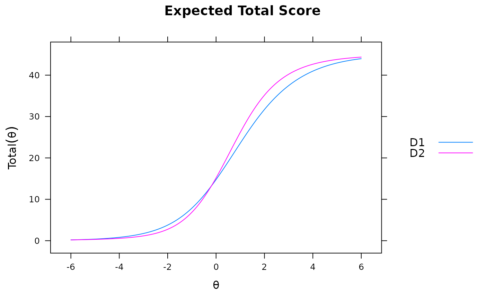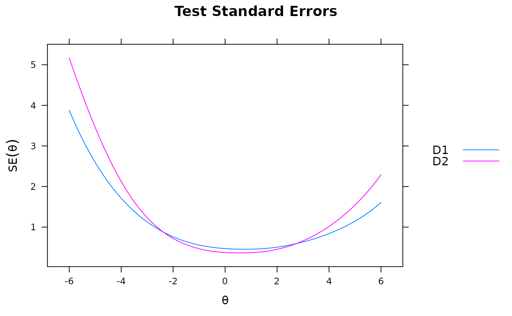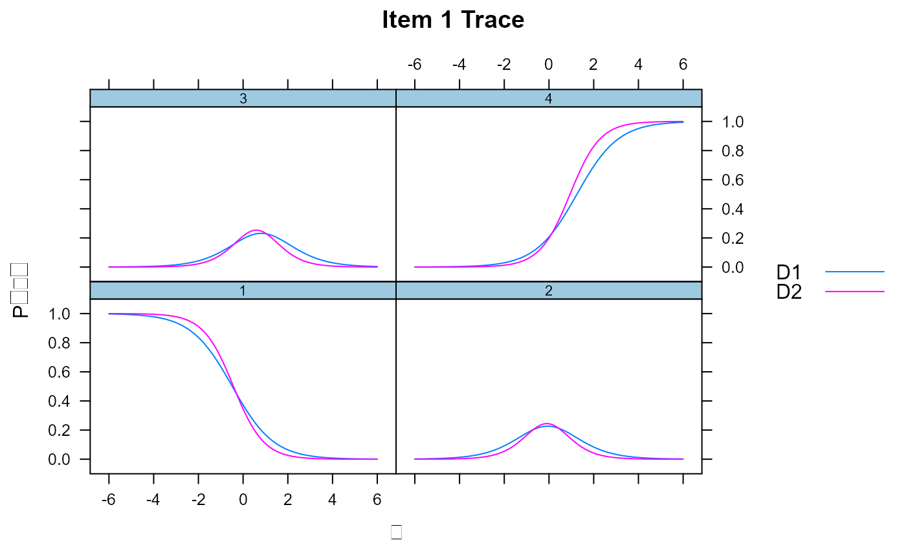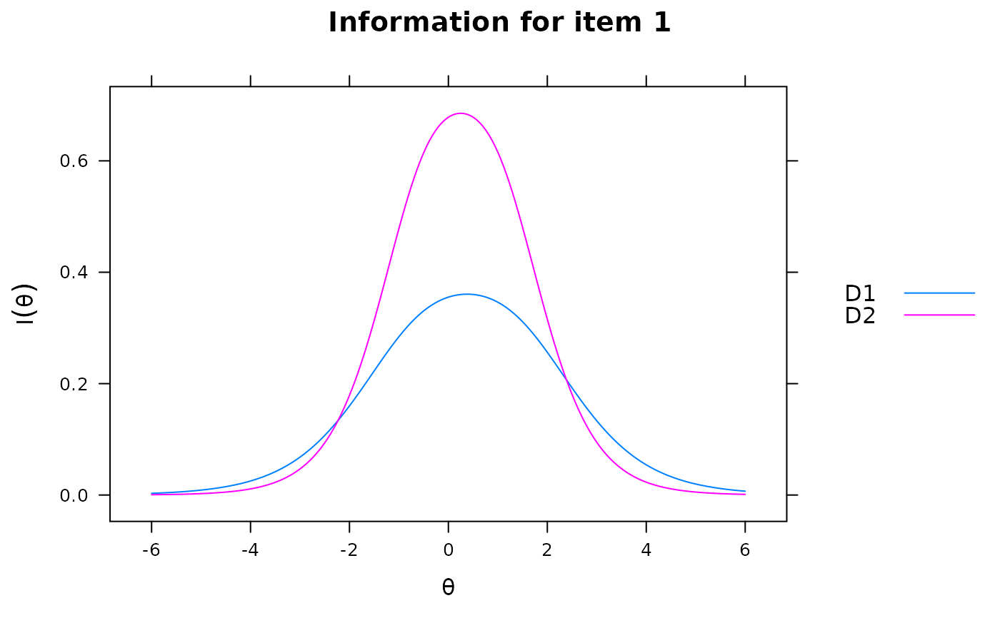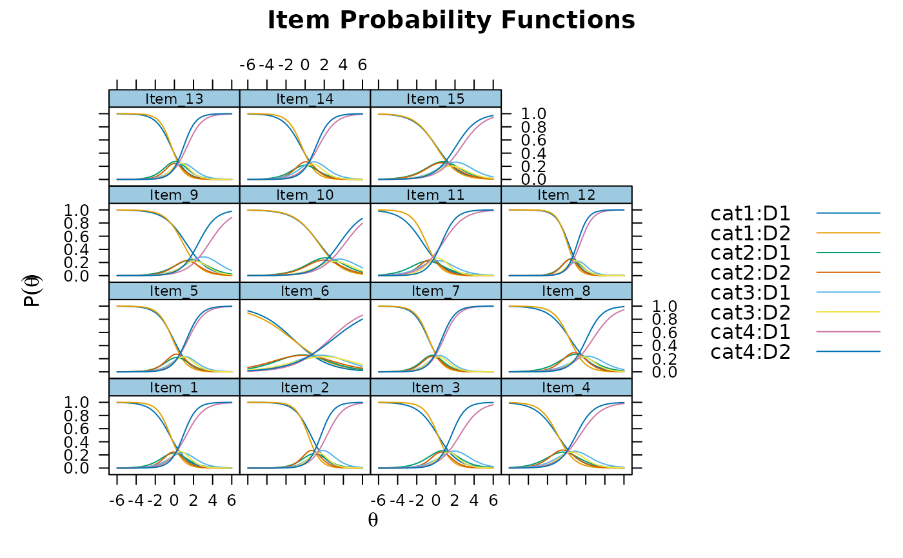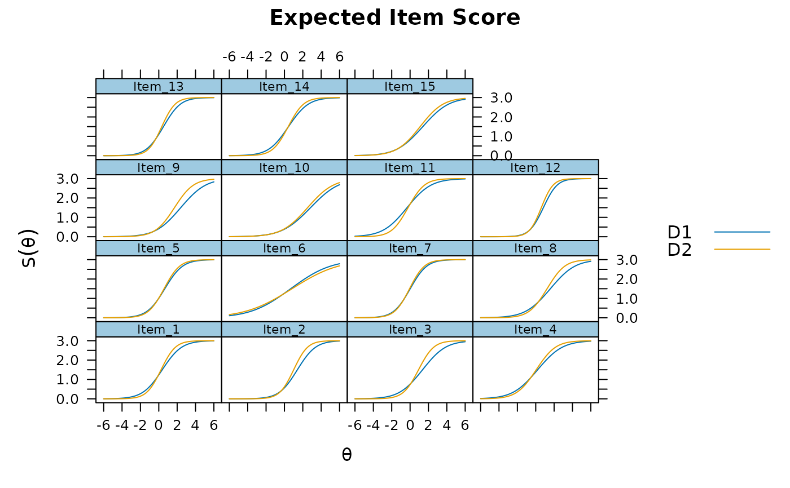#> #> Method: EAP #> #> Empirical Reliability: #> #> F1 #> 0.7942 #> #> Method: EAP #> #> Empirical Reliability: #> #> F1 #> 0.7249#> Item_1 Item_2 Item_3 Item_4 Item_5 Item_6 Item_7 Item_8 Item_9 Item_10 #> [1,] 0 0 0 0 0 0 0 0 0 0 #> [2,] 0 0 0 0 0 0 0 0 0 0 #> [3,] 0 0 0 0 0 0 0 0 0 0 #> [4,] 0 0 0 0 0 0 0 0 0 0 #> [5,] 0 0 0 0 0 0 0 0 0 0 #> [6,] 0 0 0 0 0 0 0 0 0 0 #> Item_11 Item_12 Item_13 Item_14 Item_15 F1 SE_F1 #> [1,] 0 0 0 0 0 -2.137057 0.6262718 #> [2,] 0 0 0 1 0 -1.785692 0.5741235 #> [3,] 0 0 0 2 0 -1.726621 0.5800312 #> [4,] 0 0 0 3 0 -1.688716 0.5856268 #> [5,] 0 0 0 3 1 -1.439230 0.5535499 #> [6,] 0 2 0 0 0 -1.582715 0.5660598#> df X2 p.X2 rxx_F1 #> stats 39 42.3736 0.3276019 0.7756172 #> #> df X2 p.X2 rxx_F1 #> stats 42 29.47476 0.9275319 0.8318466 #>#> $D1 #> Sum.Scores F1 SE_F1 observed expected #> 0 0 -2.137056571 0.6262718 6 5.73109351 #> 1 1 -1.842264892 0.5888524 6 10.08249658 #> 2 2 -1.645473282 0.5750881 19 15.02644052 #> 3 3 -1.490721890 0.5681733 22 21.11696057 #> 4 4 -1.322711281 0.5477826 31 26.16731434 #> 5 5 -1.172604831 0.5343878 21 30.81114990 #> 6 6 -1.033369339 0.5229023 30 34.97351878 #> 7 7 -0.898167173 0.5101253 37 38.28642383 #> 8 8 -0.770379457 0.4995061 47 40.92147880 #> 9 9 -0.648276432 0.4899687 40 42.89556178 #> 10 10 -0.530510563 0.4810482 54 44.20825135 #> 11 11 -0.417091373 0.4732401 52 44.94497190 #> 12 12 -0.307324568 0.4662902 50 45.16103716 #> 13 13 -0.200657261 0.4600924 35 44.90907260 #> 14 14 -0.096765731 0.4546839 41 44.25218142 #> 15 15 0.004759979 0.4499792 33 43.24436610 #> 16 16 0.104274150 0.4459305 50 41.93576820 #> 17 17 0.202071875 0.4425175 38 40.37507439 #> 18 18 0.298449688 0.4397012 34 38.60588648 #> 19 19 0.393678038 0.4374552 40 36.66805455 #> 20 20 0.488005095 0.4357619 30 34.59858721 #> 21 21 0.581672874 0.4346027 42 32.43092042 #> 22 22 0.674910103 0.4339646 32 30.19547737 #> 23 23 0.767936430 0.4338392 28 27.92026366 #> 24 24 0.860968350 0.4342199 19 25.63069681 #> 25 25 0.954215436 0.4351028 34 23.34994031 #> 26 26 1.047885949 0.4364871 21 21.09940667 #> 27 27 1.142189172 0.4383746 18 18.89862600 #> 28 28 1.237330487 0.4407665 21 16.76546357 #> 29 29 1.333523036 0.4436684 10 14.71661806 #> 30 30 1.430986181 0.4470894 11 12.76726484 #> 31 31 1.529934577 0.4510309 8 10.93114666 #> 32 32 1.630612066 0.4555070 8 9.22112463 #> 33 33 1.733275013 0.4605369 8 7.64818473 #> 34 34 1.838159660 0.4661076 6 6.22141174 #> 35 35 1.945607770 0.4722588 1 4.94877914 #> 36 36 2.055967060 0.4790331 4 3.83475999 #> 37 37 2.169474066 0.4863361 6 2.88068295 #> 38 38 2.286835091 0.4943335 3 2.08640054 #> 39 39 2.408610541 0.5031395 3 1.44515936 #> 40 40 2.534716484 0.5122127 1 0.94647470 #> 41 41 2.667837422 0.5224882 0 0.57961995 #> 42 42 2.809124363 0.5344050 0 0.32363184 #> 43 43 2.954702353 0.5443165 0 0.15780845 #> 44 44 3.126043964 0.5588330 0 0.06566840 #> 45 45 3.344807894 0.5841433 0 0.01877922 #> #> $D2 #> Sum.Scores F1 SE_F1 observed expected #> 0 0 -2.05130154 0.5912973 9 11.0355978 #> 1 1 -1.75022208 0.5476302 23 16.1395895 #> 2 2 -1.55419674 0.5300849 22 20.9952745 #> 3 3 -1.41173370 0.5243664 31 27.0499126 #> 4 4 -1.24022266 0.4925574 35 30.4339815 #> 5 5 -1.09460723 0.4745106 33 33.1973941 #> 6 6 -0.96352775 0.4602807 34 35.4757938 #> 7 7 -0.83622876 0.4435206 32 36.8803015 #> 8 8 -0.71831303 0.4305401 32 37.8120865 #> 9 9 -0.60733281 0.4193943 31 38.3526137 #> 10 10 -0.50128231 0.4091029 28 38.5164821 #> 11 11 -0.40019407 0.4004018 46 38.4037717 #> 12 12 -0.30319834 0.3928821 41 38.0627584 #> 13 13 -0.20956698 0.3863159 36 37.5255576 #> 14 14 -0.11890072 0.3807251 33 36.8301475 #> 15 15 -0.03072312 0.3759795 37 36.0028602 #> 16 16 0.05538372 0.3719906 33 35.0638735 #> 17 17 0.13975529 0.3687182 33 34.0317999 #> 18 18 0.22271790 0.3661063 42 32.9212969 #> 19 19 0.30456977 0.3641136 28 31.7441591 #> 20 20 0.38557952 0.3627146 29 30.5107753 #> 21 21 0.46600618 0.3618867 30 29.2298023 #> 22 22 0.54609598 0.3616155 24 27.9084015 #> 23 23 0.62608453 0.3618947 28 26.5529477 #> 24 24 0.70620669 0.3627244 29 25.1690033 #> 25 25 0.78669301 0.3641096 27 23.7612468 #> 26 26 0.86777451 0.3660611 29 22.3340727 #> 27 27 0.94969277 0.3686001 19 20.8916388 #> 28 28 1.03268637 0.3717461 17 19.4374534 #> 29 29 1.11700520 0.3755241 13 17.9753823 #> 30 30 1.20293125 0.3799843 19 16.5097589 #> 31 31 1.29071727 0.3851447 17 15.0440068 #> 32 32 1.38065471 0.3910380 17 13.5834528 #> 33 33 1.47313321 0.3977848 16 12.1351562 #> 34 34 1.56833794 0.4053106 11 10.7031592 #> 35 35 1.66666006 0.4136580 8 9.2985852 #> 36 36 1.76883244 0.4232093 11 7.9356798 #> 37 37 1.87438760 0.4333202 3 6.6167296 #> 38 38 1.98429588 0.4442628 6 5.3697725 #> 39 39 2.10060111 0.4574333 4 4.2190260 #> 40 40 2.21882242 0.4694235 2 3.1515306 #> 41 41 2.34438673 0.4824723 2 2.2364769 #> 42 42 2.48431292 0.5010803 0 1.4847938 #> 43 43 2.61160847 0.5110566 0 0.8421851 #> 44 44 2.76572671 0.5249232 0 0.4383661 #> 45 45 2.98799279 0.5545631 0 0.1853440 #># constrain slopes within each group to be equal (but not across groups) model2 <- 'F1 = 1-15 CONSTRAIN = (1-15, a1)' mod_configural2 <- multipleGroup(dat, model2, group = group) plot(mod_configural2, type = 'SE')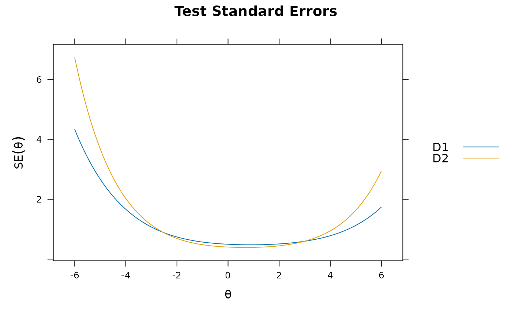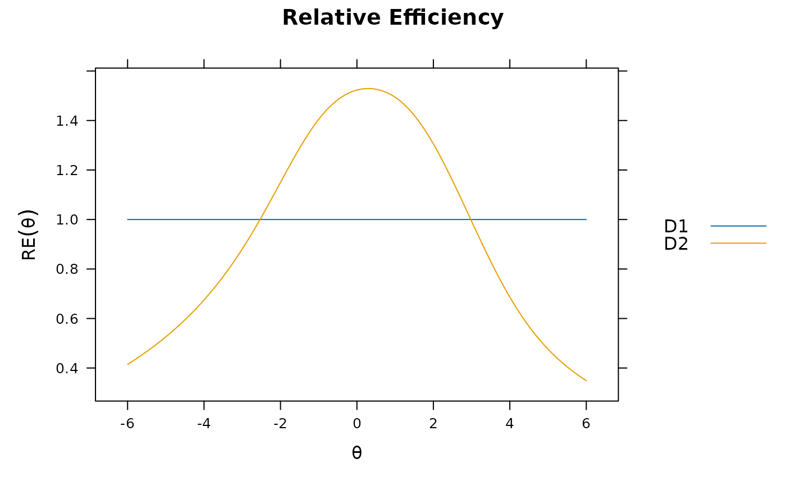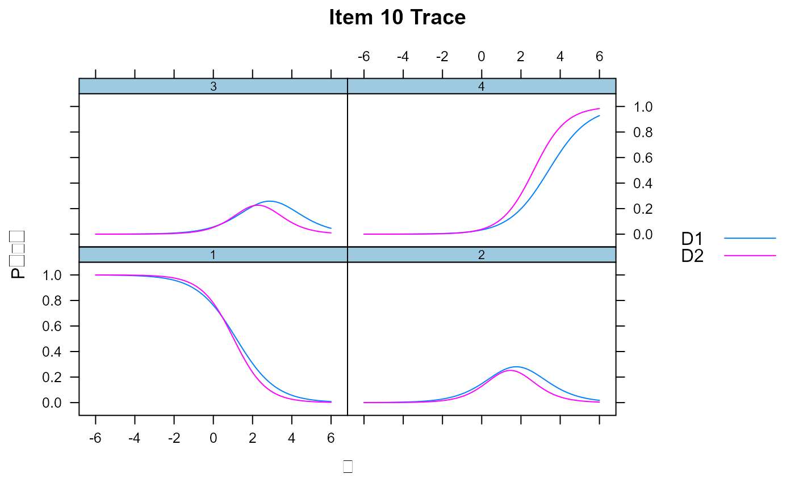############ ## empirical histogram example (normal and bimodal groups) set.seed(1234) a <- matrix(rlnorm(50, .2, .2)) d <- matrix(rnorm(50)) ThetaNormal <- matrix(rnorm(2000)) ThetaBimodal <- scale(matrix(c(rnorm(1000, -2), rnorm(1000,2)))) #bimodal Theta <- rbind(ThetaNormal, ThetaBimodal) dat <- simdata(a, d, 4000, itemtype = '2PL', Theta=Theta) group <- rep(c('G1', 'G2'), each=2000) EH <- multipleGroup(dat, 1, group=group, dentype="empiricalhist", invariance = colnames(dat)) coef(EH, simplify=TRUE)#> $G1 #> $items #> a1 d g u #> Item_1 0.759 -1.830 0 1 #> Item_2 1.062 -0.555 0 1 #> Item_3 1.235 -1.117 0 1 #> Item_4 0.611 -0.953 0 1 #> Item_5 1.088 -0.132 0 1 #> Item_6 1.054 0.502 0 1 #> Item_7 0.849 1.581 0 1 #> Item_8 0.870 -0.779 0 1 #> Item_9 0.902 1.658 0 1 #> Item_10 0.812 -1.188 0 1 #> Item_11 0.903 0.661 0 1 #> Item_12 0.841 2.646 0 1 #> Item_13 0.843 -0.064 0 1 #> Item_14 1.009 -0.600 0 1 #> Item_15 1.167 0.013 0 1 #> Item_16 1.008 1.886 0 1 #> Item_17 0.885 -1.124 0 1 #> Item_18 0.790 1.420 0 1 #> Item_19 0.799 1.316 0 1 #> Item_20 1.565 0.294 0 1 #> Item_21 1.002 0.001 0 1 #> Item_22 0.929 -0.497 0 1 #> Item_23 0.903 -0.383 0 1 #> Item_24 1.120 0.702 0 1 #> Item_25 0.850 2.002 0 1 #> Item_26 0.706 -0.208 0 1 #> Item_27 1.048 -1.279 0 1 #> Item_28 0.826 -0.770 0 1 #> Item_29 1.062 0.221 0 1 #> Item_30 0.737 -0.333 0 1 #> Item_31 1.208 -0.178 0 1 #> Item_32 0.917 -0.202 0 1 #> Item_33 0.859 -1.360 0 1 #> Item_34 0.913 -0.252 0 1 #> Item_35 0.767 0.886 0 1 #> Item_36 0.783 0.763 0 1 #> Item_37 0.630 0.550 0 1 #> Item_38 0.736 -0.405 0 1 #> Item_39 0.917 -0.166 0 1 #> Item_40 0.895 -1.251 0 1 #> Item_41 1.251 -0.040 0 1 #> Item_42 0.882 0.202 0 1 #> Item_43 0.796 1.639 0 1 #> Item_44 1.022 1.038 0 1 #> Item_45 0.812 -0.470 0 1 #> Item_46 0.807 0.336 0 1 #> Item_47 0.815 -1.121 0 1 #> Item_48 0.739 0.892 0 1 #> Item_49 0.904 1.036 0 1 #> Item_50 0.895 2.124 0 1 #> #> $means #> F1 #> 0 #> #> $cov #> F1 #> F1 1 #> #> #> $G2 #> $items #> a1 d g u #> Item_1 0.759 -1.830 0 1 #> Item_2 1.062 -0.555 0 1 #> Item_3 1.235 -1.117 0 1 #> Item_4 0.611 -0.953 0 1 #> Item_5 1.088 -0.132 0 1 #> Item_6 1.054 0.502 0 1 #> Item_7 0.849 1.581 0 1 #> Item_8 0.870 -0.779 0 1 #> Item_9 0.902 1.658 0 1 #> Item_10 0.812 -1.188 0 1 #> Item_11 0.903 0.661 0 1 #> Item_12 0.841 2.646 0 1 #> Item_13 0.843 -0.064 0 1 #> Item_14 1.009 -0.600 0 1 #> Item_15 1.167 0.013 0 1 #> Item_16 1.008 1.886 0 1 #> Item_17 0.885 -1.124 0 1 #> Item_18 0.790 1.420 0 1 #> Item_19 0.799 1.316 0 1 #> Item_20 1.565 0.294 0 1 #> Item_21 1.002 0.001 0 1 #> Item_22 0.929 -0.497 0 1 #> Item_23 0.903 -0.383 0 1 #> Item_24 1.120 0.702 0 1 #> Item_25 0.850 2.002 0 1 #> Item_26 0.706 -0.208 0 1 #> Item_27 1.048 -1.279 0 1 #> Item_28 0.826 -0.770 0 1 #> Item_29 1.062 0.221 0 1 #> Item_30 0.737 -0.333 0 1 #> Item_31 1.208 -0.178 0 1 #> Item_32 0.917 -0.202 0 1 #> Item_33 0.859 -1.360 0 1 #> Item_34 0.913 -0.252 0 1 #> Item_35 0.767 0.886 0 1 #> Item_36 0.783 0.763 0 1 #> Item_37 0.630 0.550 0 1 #> Item_38 0.736 -0.405 0 1 #> Item_39 0.917 -0.166 0 1 #> Item_40 0.895 -1.251 0 1 #> Item_41 1.251 -0.040 0 1 #> Item_42 0.882 0.202 0 1 #> Item_43 0.796 1.639 0 1 #> Item_44 1.022 1.038 0 1 #> Item_45 0.812 -0.470 0 1 #> Item_46 0.807 0.336 0 1 #> Item_47 0.815 -1.121 0 1 #> Item_48 0.739 0.892 0 1 #> Item_49 0.904 1.036 0 1 #> Item_50 0.895 2.124 0 1 #> #> $means #> F1 #> 0 #> #> $cov #> F1 #> F1 1 #> #>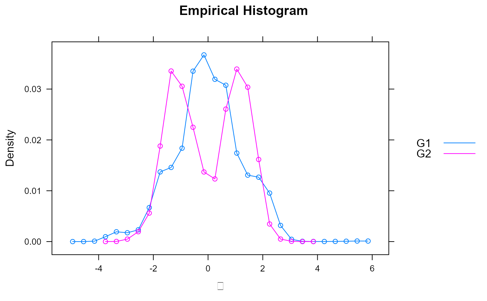#DIF test for item 1 EH1 <- multipleGroup(dat, 1, group=group, dentype="empiricalhist", invariance = colnames(dat)[-1]) anova(EH, EH1)#> #> Model 1: multipleGroup(data = dat, model = 1, group = group, invariance = colnames(dat), #> dentype = "empiricalhist") #> Model 2: multipleGroup(data = dat, model = 1, group = group, invariance = colnames(dat)[-1], #> dentype = "empiricalhist") #>#> AIC AICc SABIC HQ BIC logLik X2 df p #> 1 216599.8 216663.2 217659.4 217358.4 218739.8 -107959.9 NaN NaN NaN #> 2 216602.9 216667.0 217668.7 217365.9 218755.4 -107959.4 0.916 2 0.632#-------------------------------- # Mixture model (no prior group variable specified) set.seed(12345) nitems <- 20 a1 <- matrix(.75, ncol=1, nrow=nitems) a2 <- matrix(1.25, ncol=1, nrow=nitems) d1 <- matrix(rnorm(nitems,0,1),ncol=1) d2 <- matrix(rnorm(nitems,0,1),ncol=1) itemtype <- rep('2PL', nrow(a1)) N1 <- 500 N2 <- N1*2 # second class twice as large dataset1 <- simdata(a1, d1, N1, itemtype) dataset2 <- simdata(a2, d2, N2, itemtype) dat <- rbind(dataset1, dataset2) # group <- c(rep('D1', N1), rep('D2', N2)) # Mixture Rasch model (Rost, 1990) models <- 'F1 = 1-20 CONSTRAIN = (1-20, a1)' mod_mix <- multipleGroup(dat, models, dentype = 'mixture-2', GenRandomPars = TRUE) coef(mod_mix, simplify=TRUE)#> $MIXTURE_1 #> $items #> a1 d g u #> Item_1 1.302 0.772 0 1 #> Item_2 1.302 1.476 0 1 #> Item_3 1.302 -0.553 0 1 #> Item_4 1.302 -1.588 0 1 #> Item_5 1.302 -1.545 0 1 #> Item_6 1.302 2.084 0 1 #> Item_7 1.302 -0.510 0 1 #> Item_8 1.302 0.606 0 1 #> Item_9 1.302 0.550 0 1 #> Item_10 1.302 -0.167 0 1 #> Item_11 1.302 0.961 0 1 #> Item_12 1.302 2.156 0 1 #> Item_13 1.302 2.082 0 1 #> Item_14 1.302 1.733 0 1 #> Item_15 1.302 0.138 0 1 #> Item_16 1.302 0.434 0 1 #> Item_17 1.302 -0.368 0 1 #> Item_18 1.302 -1.633 0 1 #> Item_19 1.302 1.799 0 1 #> Item_20 1.302 -0.024 0 1 #> #> $means #> F1 #> 0 #> #> $cov #> F1 #> F1 1 #> #> $class_proportion #> pi #> 0.655 #> #> #> $MIXTURE_2 #> $items #> a1 d g u #> Item_1 0.681 0.664 0 1 #> Item_2 0.681 0.805 0 1 #> Item_3 0.681 -0.039 0 1 #> Item_4 0.681 -0.416 0 1 #> Item_5 0.681 0.530 0 1 #> Item_6 0.681 -2.046 0 1 #> Item_7 0.681 0.770 0 1 #> Item_8 0.681 -0.314 0 1 #> Item_9 0.681 -0.031 0 1 #> Item_10 0.681 -0.820 0 1 #> Item_11 0.681 -0.252 0 1 #> Item_12 0.681 1.939 0 1 #> Item_13 0.681 0.642 0 1 #> Item_14 0.681 0.593 0 1 #> Item_15 0.681 -0.750 0 1 #> Item_16 0.681 0.852 0 1 #> Item_17 0.681 -0.950 0 1 #> Item_18 0.681 -0.345 0 1 #> Item_19 0.681 1.230 0 1 #> Item_20 0.681 0.271 0 1 #> #> $means #> F1 #> 0 #> #> $cov #> F1 #> F1 1 #> #> $class_proportion #> pi #> 0.345 #> #>#> #> ---------- #> GROUP: MIXTURE_1 #> F1 h2 #> Item_1 0.608 0.369 #> Item_2 0.608 0.369 #> Item_3 0.608 0.369 #> Item_4 0.608 0.369 #> Item_5 0.608 0.369 #> Item_6 0.608 0.369 #> Item_7 0.608 0.369 #> Item_8 0.608 0.369 #> Item_9 0.608 0.369 #> Item_10 0.608 0.369 #> Item_11 0.608 0.369 #> Item_12 0.608 0.369 #> Item_13 0.608 0.369 #> Item_14 0.608 0.369 #> Item_15 0.608 0.369 #> Item_16 0.608 0.369 #> Item_17 0.608 0.369 #> Item_18 0.608 0.369 #> Item_19 0.608 0.369 #> Item_20 0.608 0.369 #> #> SS loadings: 7.386 #> Proportion Var: 0.369 #> #> Factor correlations: #> #> F1 #> F1 1 #> #> Class proportion: 0.655 #> #> ---------- #> GROUP: MIXTURE_2 #> F1 h2 #> Item_1 0.371 0.138 #> Item_2 0.371 0.138 #> Item_3 0.371 0.138 #> Item_4 0.371 0.138 #> Item_5 0.371 0.138 #> Item_6 0.371 0.138 #> Item_7 0.371 0.138 #> Item_8 0.371 0.138 #> Item_9 0.371 0.138 #> Item_10 0.371 0.138 #> Item_11 0.371 0.138 #> Item_12 0.371 0.138 #> Item_13 0.371 0.138 #> Item_14 0.371 0.138 #> Item_15 0.371 0.138 #> Item_16 0.371 0.138 #> Item_17 0.371 0.138 #> Item_18 0.371 0.138 #> Item_19 0.371 0.138 #> Item_20 0.371 0.138 #> #> SS loadings: 2.758 #> Proportion Var: 0.138 #> #> Factor correlations: #> #> F1 #> F1 1 #> #> Class proportion: 0.345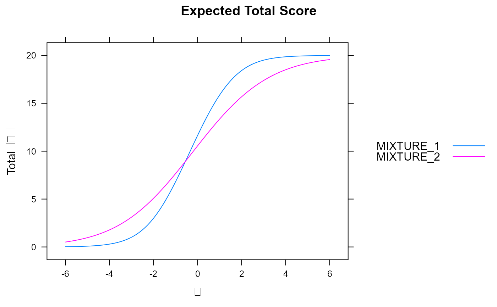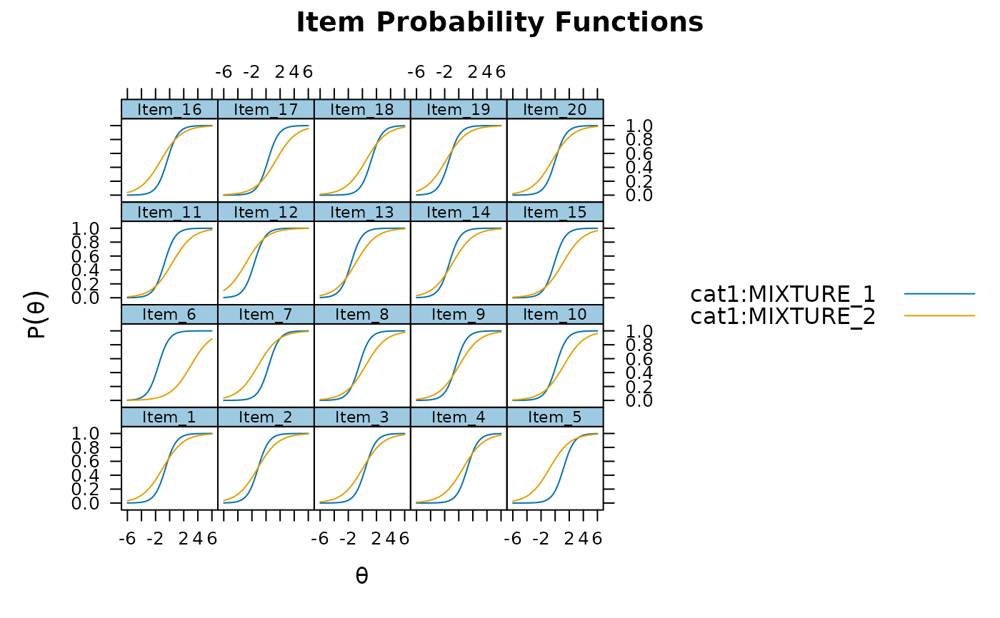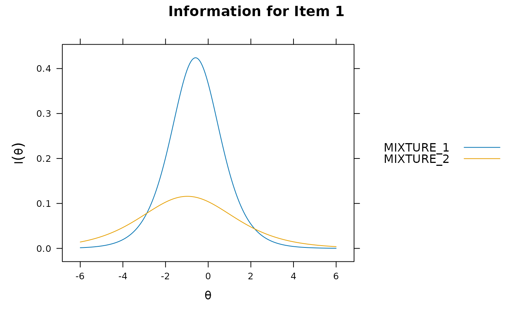#> Class_1 #> [1,] -0.3608700 #> [2,] -1.6950983 #> [3,] -0.8216594 #> [4,] 0.8090804 #> [5,] 0.7936639 #> [6,] 0.2285733#> CLASS_1 CLASS_2 #> [1,] 0.04827981 0.9517202 #> [2,] 0.74219783 0.2578022 #> [3,] 0.02497150 0.9750285 #> [4,] 0.02930674 0.9706933 #> [5,] 0.07222962 0.9277704 #> [6,] 0.42448185 0.5755182#> item S_X2 df.S_X2 RMSEA.S_X2 p.S_X2 #> 1 Item_1 30.497 12 0.032 0.002 #> 2 Item_2 36.271 12 0.037 0.000 #> 3 Item_3 15.755 12 0.014 0.203 #> 4 Item_4 9.333 11 0.000 0.591 #> 5 Item_5 21.637 12 0.023 0.042 #> 6 Item_6 26.068 13 0.026 0.017 #> 7 Item_7 8.625 12 0.000 0.735 #> 8 Item_8 16.652 12 0.016 0.163 #> 9 Item_9 22.772 12 0.024 0.030 #> 10 Item_10 14.622 12 0.012 0.263 #> 11 Item_11 7.357 12 0.000 0.833 #> 12 Item_12 14.964 12 0.013 0.243 #> 13 Item_13 10.222 12 0.000 0.597 #> 14 Item_14 17.414 13 0.015 0.181 #> 15 Item_15 9.436 12 0.000 0.665 #> 16 Item_16 11.408 12 0.000 0.494 #> 17 Item_17 16.484 12 0.016 0.170 #> 18 Item_18 11.718 11 0.007 0.385 #> 19 Item_19 11.425 12 0.000 0.493 #> 20 Item_20 15.290 12 0.014 0.226# Mixture 2PL model mod_mix2 <- multipleGroup(dat, 1, dentype = 'mixture-2', GenRandomPars = TRUE) anova(mod_mix2, mod_mix)#> #> Model 1: multipleGroup(data = dat, model = models, dentype = "mixture-2", #> GenRandomPars = TRUE) #> Model 2: multipleGroup(data = dat, model = 1, dentype = "mixture-2", GenRandomPars = TRUE) #>#> AIC AICc SABIC HQ BIC logLik X2 df p #> 1 34628.19 34630.79 34720.06 34713.30 34856.65 -17271.09 NaN NaN NaN #> 2 34655.23 34664.60 34828.29 34815.56 35085.60 -17246.62 48.957 38 0.11#> $MIXTURE_1 #> $items #> a1 d g u #> Item_1 0.517 0.672 0 1 #> Item_2 0.516 0.826 0 1 #> Item_3 0.533 -0.012 0 1 #> Item_4 0.387 -0.363 0 1 #> Item_5 0.452 0.551 0 1 #> Item_6 0.727 -1.904 0 1 #> Item_7 1.032 0.879 0 1 #> Item_8 0.744 -0.275 0 1 #> Item_9 0.900 0.037 0 1 #> Item_10 0.709 -0.777 0 1 #> Item_11 0.538 -0.190 0 1 #> Item_12 0.915 2.079 0 1 #> Item_13 0.729 0.690 0 1 #> Item_14 1.183 0.722 0 1 #> Item_15 0.812 -0.717 0 1 #> Item_16 0.582 0.843 0 1 #> Item_17 0.791 -0.953 0 1 #> Item_18 0.657 -0.290 0 1 #> Item_19 0.498 1.222 0 1 #> Item_20 0.468 0.304 0 1 #> #> $means #> F1 #> 0 #> #> $cov #> F1 #> F1 1 #> #> $class_proportion #> pi #> 0.349 #> #> #> $MIXTURE_2 #> $items #> a1 d g u #> Item_1 1.118 0.710 0 1 #> Item_2 1.216 1.405 0 1 #> Item_3 1.244 -0.565 0 1 #> Item_4 1.684 -1.826 0 1 #> Item_5 1.669 -1.800 0 1 #> Item_6 1.473 2.151 0 1 #> Item_7 1.143 -0.511 0 1 #> Item_8 1.244 0.574 0 1 #> Item_9 1.272 0.506 0 1 #> Item_10 1.188 -0.183 0 1 #> Item_11 1.465 0.980 0 1 #> Item_12 1.403 2.208 0 1 #> Item_13 1.388 2.110 0 1 #> Item_14 1.062 1.599 0 1 #> Item_15 1.311 0.112 0 1 #> Item_16 1.191 0.410 0 1 #> Item_17 1.381 -0.387 0 1 #> Item_18 1.500 -1.798 0 1 #> Item_19 1.624 1.955 0 1 #> Item_20 1.353 -0.060 0 1 #> #> $means #> F1 #> 0 #> #> $cov #> F1 #> F1 1 #> #> $class_proportion #> pi #> 0.651 #> #>#> item S_X2 df.S_X2 RMSEA.S_X2 p.S_X2 #> 1 Item_1 21.271 12 0.023 0.047 #> 2 Item_2 44.619 13 0.040 0.000 #> 3 Item_3 14.259 12 0.011 0.284 #> 4 Item_4 6.550 11 0.000 0.834 #> 5 Item_5 20.639 12 0.022 0.056 #> 6 Item_6 27.956 13 0.028 0.009 #> 7 Item_7 8.628 12 0.000 0.734 #> 8 Item_8 16.261 12 0.015 0.180 #> 9 Item_9 21.304 12 0.023 0.046 #> 10 Item_10 11.461 12 0.000 0.490 #> 11 Item_11 7.091 12 0.000 0.852 #> 12 Item_12 13.837 12 0.010 0.311 #> 13 Item_13 10.444 12 0.000 0.577 #> 14 Item_14 15.704 13 0.012 0.265 #> 15 Item_15 9.439 12 0.000 0.665 #> 16 Item_16 10.128 12 0.000 0.605 #> 17 Item_17 17.474 12 0.017 0.133 #> 18 Item_18 11.833 11 0.007 0.376 #> 19 Item_19 8.071 11 0.000 0.707 #> 20 Item_20 14.542 12 0.012 0.267# Zero-inflated 2PL IRT model model <- "F = 1-20 START [MIXTURE_1] = (GROUP, MEAN_1, -100), (GROUP, COV_11, .00001), (1-20, a1, 1.0), (1-20, d, 0.0) FIXED [MIXTURE_1] = (GROUP, MEAN_1), (GROUP, COV_11), (1-20, a1), (1-20, d)" zip <- multipleGroup(dat, model, dentype = 'mixture-2') coef(zip, simplify=TRUE)#> $MIXTURE_1 #> $items #> a1 d g u #> Item_1 1 0 0 1 #> Item_2 1 0 0 1 #> Item_3 1 0 0 1 #> Item_4 1 0 0 1 #> Item_5 1 0 0 1 #> Item_6 1 0 0 1 #> Item_7 1 0 0 1 #> Item_8 1 0 0 1 #> Item_9 1 0 0 1 #> Item_10 1 0 0 1 #> Item_11 1 0 0 1 #> Item_12 1 0 0 1 #> Item_13 1 0 0 1 #> Item_14 1 0 0 1 #> Item_15 1 0 0 1 #> Item_16 1 0 0 1 #> Item_17 1 0 0 1 #> Item_18 1 0 0 1 #> Item_19 1 0 0 1 #> Item_20 1 0 0 1 #> #> $means #> F #> -100 #> #> $cov #> F #> F 0 #> #> $class_proportion #> pi #> 0.014 #> #> #> $MIXTURE_2 #> $items #> a1 d g u #> Item_1 0.902 0.699 0 1 #> Item_2 0.948 1.172 0 1 #> Item_3 0.890 -0.338 0 1 #> Item_4 0.827 -1.048 0 1 #> Item_5 0.634 -0.612 0 1 #> Item_6 0.709 0.420 0 1 #> Item_7 0.831 -0.025 0 1 #> Item_8 1.074 0.251 0 1 #> Item_9 1.141 0.334 0 1 #> Item_10 1.042 -0.410 0 1 #> Item_11 1.095 0.482 0 1 #> Item_12 1.217 2.180 0 1 #> Item_13 1.034 1.459 0 1 #> Item_14 1.032 1.255 0 1 #> Item_15 1.148 -0.199 0 1 #> Item_16 0.930 0.571 0 1 #> Item_17 1.195 -0.610 0 1 #> Item_18 0.807 -1.033 0 1 #> Item_19 1.181 1.640 0 1 #> Item_20 0.985 0.087 0 1 #> #> $means #> F #> 0 #> #> $cov #> F #> F 1 #> #> $class_proportion #> pi #> 0.986 #> #># }